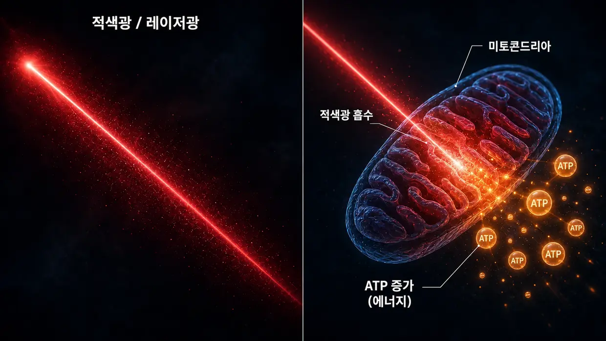
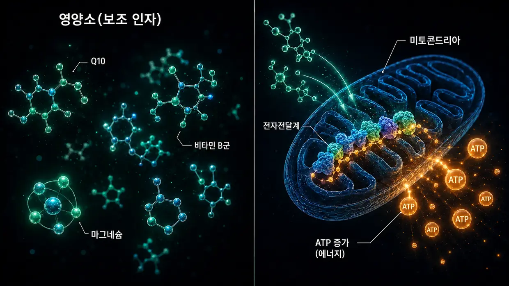

과학적 출처와 임상 근거
이 페이지는 이 웹사이트에 제가 쓰는 모든 내용의 토대를 보여 줍니다. 제 모델은 제 이명에서 세포 수준으로 어떤 일이 일어났는지를 개인적으로 해석한 결과입니다. 하지만 감각모의 액틴 필라멘트 사이를 잇는 교차결합 단백질(Crosslinker), 소음으로 인한 칼페인(calpain) 활성화, ATP 대사, XIRP2 복구, 뇌의 중추성 이득(Central Gain), 달팽이관의 국소 시상하부-뇌하수체-부신 축(HPA축), Q10·비타민 B군·나이아신이 미토콘드리아에 미치는 작용이라는 각각의 구성 요소는 근거 없는 이야기가 아닙니다. 연구에 기록돼 있으며, 의료 현장에서도 활용돼 왔습니다.
들어가며: 서로 다른 두 갈래의 근거
먼저 솔직히 말씀드리겠습니다. 이 페이지에는 서로 다른 두 갈래의 근거를 담았습니다. 어느 한쪽을 처음부터 더 높게 두지 않고 의도적으로 나란히 제시합니다.
첫째는 기초연구에서 교차결합 단백질, 칼페인 등을 다룬 기전 연구입니다. 이 논문들은 Nature Communications, Journal of Neuroscience, PNAS, eLife 같은 학술지에 실린 동료 심사 논문입니다. 세포 수준의 작동 체계, 곧 각 세포 안에서 어떤 과정이 일어나는지를 보여 줍니다. 교차결합 단백질이 입체섬모를 어떻게 안정시키는지, 소음에 노출되면 칼페인이 어떻게 활성화되는지, XIRP2가 손상 부위를 어떻게 임시로 안정시키는지, ATP를 늘렸을 때 개인의 신체적 역량이 허용하는 범위까지 소음 손상 뒤 청력이 어떻게 회복되는지를 설명합니다. 이 연구들은 제 소음으로 인한 이명 모델을 이해하는 데 필수적입니다.
둘째는 경험 많은 의사들이 임상 현장에서 축적한 근거입니다. 다시 말해, 수년간 실제 환자에게서 직접 보고 기록한 내용입니다. 1987년부터 35년 넘게 내이 환자에게 저출력 레이저 치료를 꾸준히 시행하고 치료 전후 청력도를 표준 자료로 기록해 온 Dr. Lutz Wilden의 경험이 여기에 포함됩니다. 자가 치료와 함께 추적 청력검사를 받는 전 세계 수천 명의 가정용 레이저 사용자도 있습니다. 스위스의 Tinnitool 역시 1990년대부터 같은 작동 논리, 곧 LLLT로 청각세포의 ATP를 늘리는 방식으로 수천 명의 환자를 치료했습니다. 프라하의 Hahn 연구진이 발표한 두 연구의 환자 540명, 일본 교토대학교 연구진, 브라질 연구진도 있습니다. 레이저 출력이 충분했을 때 각각 측정 가능한 개선이 나타났습니다. 반면 레이저가 너무 약해 공정한 시험에서 효과를 찾지 못한 연구도 아래에서 솔직하게 다룹니다. 수십 년 동안 중금속·독성 물질 노출을 다뤄 온 Dr. Dietrich Klinghardt의 경험도 있습니다. 이러한 임상 경험의 대부분은 Nature Communications 같은 주요 학술지에 발표되지 않았으며, Wilden 스스로 그 이유를 이야기합니다. 그렇다고 지난 수십 년 동안 실제로 상당히 많은 환자가 이 방법으로 회복했고 이를 뒷받침하는 청력검사 자료가 있다는 사실이 달라지지는 않습니다.
두 근거가 모두 중요한 이유
동료 심사를 거친 연구만이 진지하게 받아들일 수 있는 유일한 진실인 것처럼 말하기보다, 서로 다른 두 근거를 나란히 보여 드리는 편이 더 정직하다고 생각합니다. 제가 보기에는 이명 연구비의 상당 부분이 보청기 개발과 특허로 보호되는 의약품 개발 과정에 더 많이 투입되기 때문입니다. 특허를 낼 수 없는 영양소 조합이나 특정 고용량 레이저 프로토콜, 해독 프로토콜에는 기관 차원의 연구 관심이 전혀 없습니다.
저는 의사도 과학자도 연구자도 아닙니다. 한때 이명을 겪었고 두 차례 모두 이겨 낸 당사자이며, 현재 남아 있는 청력검사 자료는 첫 번째 경과에 관한 것뿐입니다. 집요할 만큼 많이 읽고 조사하고 직접 시도했습니다. 여기서 연구나 의사를 인용한다고 해서 제 방법이 효과가 있다는 증거가 되는 것은 아닙니다. 제가 근거로 삼는 개별 구성 요소가 연구와 임상 현장에서 진지하게 다뤄지고 있다는 뜻입니다. 급성 증상, 특히 갑자기 생긴 이명이나 청력 저하가 있다면 먼저 이비인후과 진료를 받아 기질적 원인이 있는지 확인해야 합니다.
먼저 한 가지, 세부 내용에 들어가기 전에 말씀드리겠습니다. 조사 전체에서 얻은 가장 중요한 깨달음은 계속 되풀이해서 나타난 하나의 패턴입니다. 유모세포의 에너지 생산이 눈에 띄게 늘어난 모든 경우에 이명이 호전됐습니다. 전혀 다른 세 갈래의 길이지만 공통분모는 하나였습니다. 아래에서 자세히 설명합니다. 바로 그 부분으로 이동하려면 여기를 누르면 됩니다. 그 전에 귀가 어떻게 구성돼 있고 무엇이 손상되는지부터 토대를 함께 살펴보겠습니다.
1부: 기초연구에서 나온 기전 연구
입체섬모 내 액틴 필라멘트 사이의 교차결합 단백질
메인 페이지에서는 감각모를 짧은 단백질 다리 — 즉 교차결합 단백질 — 로 서로 묶인 삶지 않은 스파게티 한 다발에 비유합니다. 이 교차결합 단백질은 제가 만들어 낸 개념이 아닙니다. 이들은 구체적인 세 단백질 계열 — Plastin/Fimbrin (PLS1), Espin (ESPN), Fascin-2 (FSCN2) — 이며, 감각모에서 이들의 존재와 기능은 20년 넘게 분자 수준에서 문서화되어 왔습니다.
Krey JF, Krystofiak ES, Dumont RA, et al. (2016). Plastin 1 widens stereocilia by transforming actin filament packing from hexagonal to liquid. Journal of Cell Biology, 215(4), 467–482. PMID: 27811163. 링크
교차결합 단백질의 양을 정량화한 핵심 연구입니다. 질량분석법을 이용해 Krey 등은 입체섬모 하나의 액틴 필라멘트 사이에 약 30,500개의 Plastin-1 분자, 16,100개의 Fascin-2 분자, 14,800개의 Espin 분자가 들어 있음을 확인했습니다. Plastin-1은 액틴 자체 다음으로 입체섬모 전체에서 두 번째로 풍부한 단백질입니다. 기능성 Plastin-1 또는 Fascin-2가 없는 생쥐에서는 청각 기능이 저하되었고, 이중 돌연변이 생쥐가 가장 큰 영향을 받았습니다. Plastin-1이 없는 입체섬모는 야생형 입체섬모보다 짧고 가늘습니다. 이는 교차결합 단백질이 실제로 감각모의 구조적 완전성을 지탱한다는 직접적인 실험 증거입니다.
Perrin BJ, Strandjord DM, Narayanan P, et al. (2013). β-Actin and Fascin-2 Cooperate to Maintain Stereocilia Length. Journal of Neuroscience, 33(19), 8114–8121. PMID: 23658152. 링크
Fascin-2가 기능을 잃으면 어떤 일이 일어나는지를 보여 주는 직접적인 증거입니다. Fascin-2 돌연변이가 있는 생쥐는 진행성 고주파 청력 손실과 두 번째 및 세 번째 입체섬모 열의 특이적인 단축을 보입니다. 돌연변이 Fascin-2 변이형은 여전히 액틴에 결합하지만 필라멘트를 더는 효과적으로 교차결합하지 못합니다 — 바로 이 때문에 감각모가 길이를 잃습니다. 이는 메인 페이지에서 소음으로 인한 교차결합 단백질 소실을 설명하며 제시한 것과 같은 구조적 최종 결과이며, 여기서는 칼페인 절단 대신 유전적 돌연변이로 이를 모사했습니다.
Sekerková G, Zheng L, Loomis PA, et al. (2004). Espins are multifunctional actin cytoskeletal regulatory proteins in the microvilli of chemosensory and mechanosensory cells. Journal of Neuroscience, 24(23), 5445–5456. PMID: 15190118. 링크
Espin을 입체섬모의 액틴 교차결합 단백질로 규명한 구조적 특성 분석 연구입니다. Espin은 평행한 액틴 필라멘트를 묶는 단백질로 확인되었으며 칼슘으로 억제되지 않습니다 — 정상적으로 기능할 때 입체섬모 내부가 칼슘 변동에 노출되므로 이는 중요합니다. Espin 결함 생쥐는 청각 소실과 평형 장애를 보입니다. Espin 돌연변이는 사람에서도 유전성 난청을 유발합니다.
이 모든 내용을 종합하면 다음과 같습니다. 세 교차결합 단백질 — Plastin/Fimbrin, Espin, Fascin-2 — 의 유전적 돌연변이나 녹아웃만으로 이미 청력 손실과 구조적 입체섬모 결함이 생긴다면, 메인 페이지에서 설명한 대로 소음에 의해 후천적으로 유발된 칼페인 절단이 이들 또는 관련 교차결합 단백질에 일어나 같은 구조적 최종 결과를 낳을 수 있다는 것은 생물학적으로 타당합니다.
소음 노출 시 칼페인 활성화
소음에 노출되면 칼슘이 유모세포 안으로 대량 유입됩니다. 이 칼슘 과부하는 칼페인 — 칼슘 의존성 단백질분해효소 — 을 활성화하고, 이어 칼페인은 액틴 교차결합 단백질을 절단합니다. 이 기전이 실제로 존재한다는 점은 서로 다른 칼페인 억제제를 사용한 독립적인 두 연구실의 연구로 입증되었습니다.
Lai R, Fang Q, Wu F, Pan S, Haque K, Sha SH. (2023). Prevention of noise-induced hearing loss by calpain inhibitor MDL-28170 is associated with upregulation of PI3K/Akt survival signaling pathway. Frontiers in Cellular Neuroscience, 17, 1199656. 링크
칼페인 기전을 직접 입증한 연구입니다. 소음은 유모세포에서 µ-칼페인과 m-칼페인을 활성화하고, 칼페인 억제제 MDL-28170은 청력 손실과 시냅스 손실을 모두 예방합니다. 이 연구는 추가로 칼페인이 구조 단백질 α-Fodrin — 세포 피질의 스펙트린-액틴 교차결합 단백질 — 을 절단한다는 것을 보여 줍니다. 이것은 입체섬모에 특이적인 Plastin/Espin/Fascin-2와 정확히 같은 유형의 교차결합 단백질은 아니지만, 소음에 의해 칼페인이 활성화되어 액틴 교차결합 단백질을 공격한다는 사실을 입증합니다. 이 과정에서 입체섬모의 교차결합 단백질도 영향을 받을 수 있다는 것은 이러한 근거의 수렴에서 도출되는 타당한 가설입니다.
Yamaguchi T, Yoneyama M, Ogita K. (2017). Calpain inhibitor alleviates permanent hearing loss induced by intense noise by preventing disruption of gap junction-mediated intercellular communication in the cochlear spiral ligament. European Journal of Pharmacology, 803, 187–194. PMID: 28366808. 링크
서로 다른 억제제(PD150606)를 사용한 두 번째 연구실에서도 칼페인 손상 기전이 확인됐습니다. 이 연구는 손상 부위를 한 곳 더 보여 줍니다. 소음 노출 시 칼페인은 나선인대, 즉 달팽이관 측벽의 간극연접(gap junction)을 통한 세포 간 신호 전달도 손상시킵니다. 소음 손상은 한 부위에만 국한되지 않습니다.
배경 자료: Fettiplace R, Hackney CM. (2006). The sensory and motor roles of auditory hair cells. Nature Reviews Neuroscience, 7(1), 19–29. — 유모세포의 구조와 기능을 다룬 고전적 종설입니다.
XIRP2에 의한 액틴 복구(1단계)
Wagner EL, Im JS, Sala S, et al. (2023). Repair of noise-induced damage to stereocilia F-actin cores is facilitated by XIRP2 and its novel mechanosensor domain. eLife, 12, e72681. PMID: 37294664. 링크
유모세포 자가 복구의 기전을 다룬 가장 중요한 연구입니다. 소음 노출 시 감각모의 액틴 골격에 측정 가능한 “간극”이 생깁니다. 생쥐에서는 새로 합성된 γ-액틴이 일주일 이내에 이 간극을 메웁니다. 복구 단백질 XIRP2는 손상을 기계적으로 감지하고 복구를 시작합니다. XIRP2가 없으면 손상이 지속됩니다.
메인 페이지에서는 XIRP2를 파손 부위를 임시로 안정시키는 “분자 차원의 초강력 덕트테이프”에 비유합니다(1단계). 본격적인 2단계 복구 — 새 액틴을 만들고 새로운 교차결합 단백질을 배치하는 과정 — 에는 모든 자원이 완벽하게 공급되는 실험실 생쥐에서도 약 일주일이 걸립니다. 동시에 에너지 소모의 쳇바퀴에 갇혀 있는 스트레스 상태의 성인에게 이것이 무엇을 의미하는지가 핵심 질문입니다 — 이러한 성인은 이 복구에 필요한 바로 그 에너지가 부족한 경우가 많기 때문입니다.
NIH 지원을 받았습니다(R01DC021176).
회복의 지렛대인 ATP 증가: AC102
이는 약리학적 경로에서 제 소음 프로토콜의 핵심입니다. 세포에 에너지가 너무 적으면, 제 생각에는 날마다 가해지는 부담을 감당하기에는 세포의 자가 복구가 너무 느리고 충분하지 않습니다. 다음 연구들은 이 생각이 제약 연구에서도 진지하게 다뤄지고 있음을 보여 줍니다 — 베를린의 한 제약회사가 현재 바로 이 기전을 겨냥한 약물을 개발하고 있습니다.
Rommelspacher H, Bera S, Brommer B, Ward R et al. (2024). A single dose of AC102 restores hearing in a guinea pig model of noise-induced hearing loss to almost prenoise levels. PNAS, 121(15), e2314763121. PMID: 38557194. 링크
AC102의 핵심 연구입니다. 시험관 내 실험에서는 AC102가 세포의 ATP 생성을 뚜렷하게 증가시키고 동시에 활성산소종(ROS)을 줄이는 것으로 나타났습니다. 동물 모델에서는 단 한 번 투여했을 때 소음 외상 후 청력이 유의하게 개선됐습니다. 연구 제목에서는 이를 “소음 노출 전 수준에 거의 근접하게”라고 표현합니다(구체적으로는 평균 80 dB의 소음 유발성 청력 손실에서 13–31 dB 개선 — 유의한 개선이지만 완전한 회복은 아닙니다). ATP 생성을 촉진하고, 활성산소종을 줄이며, 시냅스를 보호하는 이 기전은 제 모델의 작동 원리와 정확히 같습니다. 다만 여기서는 약리학적으로 유도했다는 차이가 있습니다.
Tziridis K, Rasheed J, Kwiatkowska M, et al. (2025). A Single Dose of AC102 Reverts Tinnitus by Restoring Ribbon Synapses in Noise-Exposed Mongolian Gerbils. International Journal of Molecular Sciences, 26(11), 5124. 링크
이 연구에서는 AC102가 이명 특이 행동 양상도 되돌리는지 추가로 시험했습니다. 그 결과, 해당 행동 양상은 대부분 되돌아갔고 유모세포와 청신경 사이의 리본 시냅스도 유의하게 회복됐습니다. 세포 에너지가 회복되면 청신경의 글루타메이트 지속 발화가 멈춘다는 직접적 근거입니다.
Nieratschker M, Yildiz E, Gerlitz M, et al. (2024). A preoperative dose of the pyridoindole AC102 improves the recovery of residual hearing in a gerbil animal model of cochlear implantation. Cell Death & Disease, 15, 531. 링크
AC102의 근거를 두 번째 손상 경로로 확장한 연구입니다. 인공와우 이식으로 인한 외상에서도 이 약물은 잔존 청력을 보호합니다. 이는 손상 유발 원인과 무관하게 기전이 작동함을 보여 줍니다 — 소음으로 인한 기계적 외상이든 수술로 인한 외상이든 세포 위기 연쇄반응은 같으며, ATP라는 지렛대는 두 경우 모두에서 작동합니다.
AudioCure Pharma GmbH. Clinical Study NCT05776459. AC102는 현재 돌발성 감각신경성 난청(SSNHL) 환자를 대상으로 유럽 전역에서 진행되는 2상 임상시험에 들어가 있습니다 — 환자 210명이 등록됐고 모집은 완료됐으며, 결과는 아직 나오지 않았습니다. 링크
스트레스, HPA축, 그리고 신경내분비 기관으로서의 달팽이관
스트레스로 인한 이명은 소음으로 인한 이명보다 과학적으로 규명하기가 더 어렵습니다. 제 모델에서 중요한 점은 다음과 같습니다. 일반적인 만성 스트레스가 HPA축을 통해 독자적인 이명음을 만들어 내는 것은 아닙니다. 다만 내이를 더 취약하게 만들 수는 있습니다. 교감신경계가 활성화되면 혈류가 감소할 수 있으며, 혈관조(stria vascularis)의 혈관이 수축하면 내이가 소음이나 다른 영향으로 인한 손상에 더 취약해질 수 있습니다. 다음에 소개하는 달팽이관의 국소 HPA 신호 체계 연구들은 내이에서 일어나는 생리적 과정을 설명합니다. 저는 여기서 이명을 만들어 내는 독립적인 HPA 경로를 도출하지 않습니다.
Graham CE, Vetter DE. (2011). The mouse cochlea expresses a local hypothalamic-pituitary-adrenal equivalent signaling system and requires corticotropin-releasing factor receptor 1 to establish normal hair cell innervation and cochlear sensitivity. Journal of Neuroscience, 31(4), 1267–1278. PMID: 21273411. 링크
핵심 연구입니다. 생쥐 달팽이관에는 HPA축 신호 체계 전체, 즉 코르티코트로핀 방출 인자(CRF), CRF1 수용체, ACTH, 미네랄코르티코이드 수용체, 글루코코르티코이드 수용체가 국소적으로 발현됩니다. CRF1 수용체가 결손된 생쥐에서는 유모세포 신경지배에 이상이 나타나고 달팽이관 민감도가 낮아집니다. 따라서 이 연구는 달팽이관의 국소 조절 체계를 설명하는 것이지, 독립적인 HPA 이명 경로를 뒷받침하는 근거가 아닙니다.
Graham CE, Basappa J, Vetter DE. (2010). A corticotropin-releasing factor system expressed in the cochlea modulates hearing sensitivity and protects against noise-induced hearing loss. Neurobiology of Disease, 38(2), 246–258. PMID: 20109547. 링크
Graham/Vetter의 2011년 연구에 앞서 수행된 연구입니다. 달팽이관의 국소 CRF 체계가 청각 민감도를 조절하며 소음으로 인한 청력 손상으로부터 보호할 수 있음을 보여 줍니다.
Furuta H, Mori N, Sato C, et al. (1994). Mineralocorticoid type I receptor in the rat cochlea: mRNA identification by PCR and in situ hybridization. Hearing Research, 78(2), 175–180. PMID: 7982810. 링크
이를 역사상 처음 보고한 연구입니다. 미네랄코르티코이드 수용체는 달팽이관의 혈관조에 발현됩니다 — 바로 내림프액의 칼륨 저장고를 유지하는 내이의 “배터리”입니다. 코르티솔은 그곳에서 미네랄코르티코이드 수용체를 통해 칼륨 분비를 조절할 수 있습니다.
Mazurek B, Haupt H, Olze H, Szczepek AJ. (2012). Stress and tinnitus – from bedside to bench and back. Frontiers in Systems Neuroscience, 6, 47. 링크
베를린 샤리테 연구진이 관련 근거를 체계적으로 종합한 연구입니다. Mazurek와 Szczepek은 Graham/Vetter와 Furuta의 원 연구 결과를 토대로 스트레스가 이명을 유발할 수 있는 세 가지 검증 가능한 가설을 제시합니다 — 달팽이관의 국소 HPA 체계를 통한 경로, 혈관조의 미네랄코르티코이드 수용체에 대한 코르티솔의 조절을 통한 경로(그에 따른 칼륨 분비 변화), 그리고 청각 경로의 글루타메이트 매개 가소성을 통한 경로입니다. 이는 저자들의 가설이며, 저는 이를 제 소리 발생 모델로 받아들이지 않습니다.
Hébert S, Lupien SJ. (2007). The sound of stress: Blunted cortisol reactivity to psychosocial stress in tinnitus sufferers. Neuroscience Letters, 411(2), 138–142. PMID: 17084027. 링크
이명 환자는 급성 심리사회적 스트레스에 지연되고 둔화된 코르티솔 반응을 보입니다. 따라서 이 연구는 조사 대상자에게 변화된 스트레스 반응이 있음을 설명할 뿐, HPA축 소진이 이명을 유발한다는 사실을 보여 주지는 않습니다.
Manohar S, Chen GD, Li L, Liu X, Salvi R. (2023). Chronic stress induced loudness hyperacusis, sound avoidance and auditory cortex hyperactivity. Hearing Research, 431, 108726. PMID: 36905854. 링크
이 동물 모델에서 만성 코르티솔 스트레스를 받은 랫드는 과민청각 행동과 청각피질의 이명 유사 양상을 보였습니다. 급성 소음 노출은 전혀 없었습니다. 이는 제 모델에서 독립적인 스트레스로 인한 이명 경로를 뒷받침하는 근거가 아닙니다.
Schaette R, McAlpine D. (2011). Tinnitus with a Normal Audiogram: Physiological Evidence for Hidden Hearing Loss and Computational Model. Journal of Neuroscience, 31(38), 13452–13457. 링크
Schaette와 McAlpine은 중추성 이득 모델을 설명합니다. 청각 입력이 줄어들면 중추 청각계가 자체 민감도를 높입니다. 제 모델에서 중추성 이득은 이미 존재하는 활성 오류 신호만 증폭할 뿐이며, 입력 손실만으로 이명음이 생기지는 않습니다.
Auerbach BD, Rodrigues PV, Salvi RJ. (2014). Central Gain Control in Tinnitus and Hyperacusis. Frontiers in Neurology, 5, 206.
Eggermont JJ, Roberts LE. (2004). The neuroscience of tinnitus. Trends in Neurosciences, 27(11), 676–682.
Auerbach, Rodrigues, Salvi는 이명 및 과민청각과 관련해 중추성 이득 개념을 다룹니다. 이는 이 종설의 입장이지 제 소리 발생 모델이 아닙니다. 이명과 과민청각은 함께 나타날 수 있지만, 저는 이를 중추 증폭의 부작용으로 보지는 않습니다. Eggermont/Roberts(고전적 연구): 이명은 청각피질의 자발 신경 활동 변화 및 주파수별 배열 변화와 함께 나타납니다.
트라우마, 저장된 스트레스, 그리고 이웃 신경 경로의 동반 활성화
그와 구분되는 또 하나의 중추 경로는 이런 질문을 다룹니다. 저장된 트라우마가 어떻게 수년 뒤에도 신체 증상을 일으킬 수 있으며, 뇌에서 국소적으로 독립 작동하는 스트레스 병소가 실제로 이웃 신경 중추까지 어떻게 함께 활성화할 수 있을까요?
Michael Prgomet이 설명을 위해 ‘국소 정전기장’이라고 부르는 바로 그 메커니즘입니다(14절 참조). 제 스트레스로 인한 이명 페이지에서는 이 모델을 쉬운 말로 설명했습니다. 이 절에서 보여 주듯 이 모델의 토대를 이루는 각각의 신경생물학적 구성 요소는 과학적으로 잘 확립돼 있습니다. 이 종합에서 독창적인 부분은 이 구성 요소들을 일관된 설명 모델로 연결한 데 있습니다. 각각의 메커니즘 자체는 동료 심사를 거쳤고 여러 차례 재현됐습니다.
5.1.1 트라우마는 측정 가능한 신경생물학적 흔적을 남깁니다
강렬하거나 만성적인 스트레스 경험은 특정 뇌 영역의 구조와 기능을 변화시킨다는 사실이 입증돼 있습니다. 트라우마는 ‘심리적인 것’에만 머무르지 않고 신경계에 신체적 회로로 새겨집니다.
McEwen BS, Nasca C, Gray JD. (2016). Stress Effects on Neuronal Structure: Hippocampus, Amygdala, and Prefrontal Cortex. Neuropsychopharmacology, 41(1), 3–23. PMID: 26076834. 링크
만성 스트레스가 해마와 편도체, 전전두피질에 측정 가능한 구조적·기능적 변화를 일으킨다고 설명합니다. 이 영역들은 기억과 불안, 판단, 스트레스 조절에서 핵심적인 역할을 합니다. 다시 말해, 지속해서 활성화되는 스트레스 패턴에 관여하는 바로 그 구조들입니다.
Sherin JE, Nemeroff CB. (2011). Post-traumatic stress disorder: the neurobiological impact of psychological trauma. Dialogues in Clinical Neuroscience, 13(3), 263–278. PMID: 22034143. 링크
트라우마가 장기적으로 미치는 신경생물학적 영향을 정리한 논문입니다. 편도체의 과반응성과 전전두피질의 통제력 저하, 해마의 변화, 스트레스 호르몬계의 지속적인 변화를 다룹니다. 상황이 끝났다고 트라우마도 ‘끝나는’ 것은 아닙니다. 트라우마는 신경계에 회로로 남습니다.
Yehuda R, LeDoux J. (2007). Response Variation following Trauma: A Translational Neuroscience Approach to Understanding PTSD. Neuron, 56(1), 19–32. PMID: 17920012. 링크
트라우마가 HPA축과 노르아드레날린계, 자율신경 반응성, 해마 기능을 장기적으로 변화시킬 수 있음을 보여 줍니다. 이는 배경에서 계속 작동할 수 있는 저장된 스트레스 패턴의 기전적 토대입니다.
5.1.2 알로스타틱 부하(allostatic load) — 만성 스트레스부터 문제가 되는 이유
급성·상황성 스트레스는 정상적이고 건강한 반응이며 충분히 견뎌 낼 수 있습니다. 제 스트레스로 인한 이명 페이지에서 설명하는 현상은 평범한 말다툼이나 급성 부담 때문에 나타나지 않습니다. 시스템이 더는 회복하지 못하고 부담이 시간에 따라 누적될 때 비로소 생깁니다.
McEwen BS. (1998). Stress, Adaptation, and Disease: Allostasis and Allostatic Load. Annals of the New York Academy of Sciences, 840(1), 33–44. PMID: 9629234. 링크
알로스타틱 부하 개념을 정립한 연구입니다. 급성 스트레스는 유용하지만, 만성적이고 누적된 부담은 시스템을 손상시킵니다. 바로 이 점이 제 모델을 “스트레스는 일반적으로 이명을 일으킨다”라는 오해의 소지가 있는 주장과 명확히 구분합니다. 일상적인 스트레스가 아니라, 만성적인 부담이 이미 쌓인 시스템을 말합니다.
McEwen BS, Stellar E. (1993). Stress and the individual: mechanisms leading to disease. Archives of Internal Medicine, 153(18), 2093–2101. PMID: 8379800.
만성 스트레스가 질환으로 이어지는 메커니즘을 설명합니다. 한 번의 사건이 아니라 누적된 부담을 통해서입니다. 일상적인 스트레스를 겪는 모든 사람에게 이런 현상이 생기는 것이 아니라, 이미 만성적으로 불안정해진 시스템을 가진 사람에게서만 이런 현상이 생기는 이유를 명확히 설명합니다.
5.1.3 중추 감작 — 기존 부담이 쌓인 신경계의 증폭기
만성적인 부담이 이어지면 중추신경계는 자극에 더 민감해집니다. 억제는 약해지고 흥분성은 높아지며 자극 역치는 낮아집니다. 이전에는 역치에 못 미치던 자극만으로도 갑자기 증상이 생길 수 있습니다. 이는 제가 스트레스로 인한 이명 페이지에서 ‘기존 부담이 쌓여 자극에 열린 시스템’이라고 설명한 상태를 과학적으로 표현한 것입니다.
Woolf CJ. (2011). Central sensitization: Implications for the diagnosis and treatment of pain. Pain, 152(3 Suppl), S2–S15. PMID: 20961685. 링크
중추 감작을 정상적이거나 역치에 못 미치는 입력 자극에 대한 중추 뉴런의 반응성 증가로 정의합니다. 현대 통증 연구에서 확립된 핵심 토대입니다. 제 모델은 이 원리를 스트레스로 인한 이명에 적용합니다.
Latremoliere A, Woolf CJ. (2009). Central sensitization: a generator of pain hypersensitivity by central neural plasticity. The Journal of Pain, 10(9), 895–926. PMID: 19712899. 링크
중추 감작의 세포·분자 메커니즘을 자세히 설명합니다. 기존 부담이 쌓인 시스템이 어떻게 작은 스트레스 병소도 증상으로 드러날 수 있는 조건을 만드는지 보여 줍니다.
Yunus MB. (2008). Central sensitivity syndromes: a new paradigm and group nosology for fibromyalgia and overlapping conditions. Seminars in Arthritis and Rheumatism, 37(6), 339–352. PMID: 18191990. 링크
중추 감작 개념을 섬유근육통과 만성 피로, 과민성 장 증후군, 만성 이명, 그리고 관련 증후군에 적용합니다. 제 스트레스로 인한 이명 모델을 과학적 토대와 연결하는 바로 그 다리입니다.
5.1.4 에팹틱 커플링(ephaptic coupling) — 이웃 신경세포를 직접 전기적으로 함께 자극하는 작용
이는 밴더그래프 발전기 비유의 핵심 신경생리학적 토대입니다. 한 신경 영역이 강하고 동기화된 방식으로 발화하면 고전적인 시냅스 없이도 이웃 신경세포에 실제로 영향을 줄 수 있는 국소 전기장을 만듭니다. 활동이 충분히 강하면 이 전기장이 이웃 세포를 자극 역치 너머로 밀어 올리고 발화 양상을 동기화할 수 있습니다. 바로 이것이 ‘신경 A가 발화하면 신경 B도 끌려간다’라는 설명의 바탕에 있는 메커니즘입니다.
Anastassiou CA, Perin R, Markram H, Koch C. (2011). Ephaptic coupling of cortical neurons. Nature Neuroscience, 14(2), 217–223. PMID: 21240273. 링크
피질에서 에팹틱 커플링을 직접 실험으로 입증한 연구입니다. 세포 밖의 전기장이 이웃 뉴런의 막전위를 바꾸고 활동전위의 타이밍을 동기화할 수 있음을 보여 줬습니다. 강하게 활성화된 신경세포 집단이 이웃 세포를 실제로 전기적으로 함께 활성화할 수 있다는 핵심 근거입니다.
Buzsáki G, Anastassiou CA, Koch C. (2012). The origin of extracellular fields and currents — EEG, ECoG, LFP and spikes. Nature Reviews Neuroscience, 13(6), 407–420. PMID: 22595786. 링크
뇌에서 전기장이 생기는 과정을 다룬 기초 종설입니다. 동기화돼 활성화된 뉴런 집단이 전위 기울기를 통해 다른 뉴런의 기능에 영향을 줄 수 있는 방식을 설명합니다. 여기서 말하는 현상은 고전압 구에서 튀는 ‘큰 번개’가 아닙니다. 작고 국소적으로 제한된 전기장 효과이지만 실제로 존재하며 생물학적으로 작용합니다.
Fröhlich F, McCormick DA. (2010). Endogenous electric fields may guide neocortical network activity. Neuron, 67(1), 129–143. PMID: 20624597. 링크
내인성 전기장이 신경망 활동을 단순히 따라다니는 데 그치지 않고 인과적으로 함께 조절한다는 점을 보여 줍니다. 뇌의 전기장 효과가 단지 부수 현상일 뿐이라는 견해에 강한 반증이 됩니다.
5.1.5 점화 현상(kindling) — 반복 자극이 반응 패턴을 각인합니다
한 신경 영역이 역치 이하의 자극을 반복해서 받으면 시간이 지날수록 더 쉽게 활성화되고, 이웃 영역까지 점점 더 끌어들이게 됩니다. 간질 연구에서 확립된 현상으로, 이제는 만성 통증과 트라우마, 만성 자극 상태에도 적용되고 있습니다.
Goddard GV, McIntyre DC, Leech CK. (1969). A permanent change in brain function resulting from daily electrical stimulation. Experimental Neurology, 25(3), 295–330. PMID: 4981856.
점화 현상을 다룬 고전적인 원 연구입니다. 역치 이하의 자극을 반복하면 뇌 기능에 지속적인 변화가 생기며, 해당 영역은 시간이 지날수록 더 쉽게 활성화됩니다.
Post RM. (2007). Kindling and sensitization as models for affective episode recurrence, cyclicity, and tolerance phenomena. Neuroscience & Biobehavioral Reviews, 31(6), 858–873. PMID: 17555817. 링크
점화 현상 개념을 정동장애와 외상 후 스트레스 장애(PTSD), 만성 스트레스 상태에 적용합니다. 만성적으로 다시 활성화되는 스트레스 패턴이 시간이 지나도 약해지지 않고 오히려 더 강하고 넓게 퍼질 수 있는 이유를 과학적으로 설명합니다. 제가 스트레스로 인한 이명 페이지에서 설명한 바로 그 현상입니다.
5.1.6 신경교세포 활성화와 신경염증 — 생화학적 증폭기
만성적인 자극은 미세아교세포와 성상교세포를 활성화합니다. 이 세포들은 주변 뉴런의 흥분성을 측정 가능할 만큼 높이는 신호 물질(TNF-α, IL-1β, IL-6)을 방출합니다. 그 결과 해당 영역 전체가 더 쉽게 활성화되는 상태가 됩니다. 이는 ‘기존 부담이 쌓인 시스템’과 ‘스트레스 병소가 뚫고 나올 수 있는 상태’를 잇는 생화학적 증폭기입니다.
Ji RR, Nackley A, Huh Y, Terrando N, Maixner W. (2018). Neuroinflammation and Central Sensitization in Chronic and Widespread Pain. Anesthesiology, 129(2), 343–366. PMID: 29462012. 링크
신경교세포 활성화가 중추 감작을 어떻게 촉진하는지 직접 보여 줍니다. 미세아교세포와 성상교세포는 수동적인 지지세포에 그치지 않습니다. 신경 흥분성을 능동적으로 조절하며, 만성적인 부담이 이어지면 신경조직을 계속 자극에 더 열린 상태로 만들 수 있습니다.
Michopoulos V, Powers A, Gillespie CF, Ressler KJ, Jovanovic T. (2017). Inflammation in Fear- and Anxiety-Based Disorders: PTSD, GAD, and Beyond. Neuropsychopharmacology, 42(1), 254–270. PMID: 27510423. 링크
외상 후 스트레스 장애와 만성 불안은 신경계에서 측정되는 염증성 변화와 관련돼 있습니다. 트라우마 → 스트레스 → 신경염증 → 자극에 더 열린 조직 → 저장된 스트레스 패턴의 더 쉬운 활성화로 이어지는 고리를 완성합니다.
5.1.7 시상-피질 리듬 이상(thalamocortical dysrhythmia) — 이명과의 직접적인 연관성
만성 이명에서는 시상과 청각피질 사이에 병적인 진동 패턴이 나타난다는 사실이 MEG·EEG 연구에서 확인됩니다. 국소적으로 달라진 활동 패턴은 지속적인 세타-감마 결합을 만들며, 이는 오래 지속되는 소리 지각에 기여할 수 있습니다. 과활성화된 스트레스 병소와 지속적인 이명 지각을 잇는 직접적인 신경생리학적 연결고리입니다.
Llinás RR, Ribary U, Jeanmonod D, Kronberg E, Mitra PP. (1999). Thalamocortical dysrhythmia: A neurological and neuropsychiatric syndrome characterized by magnetoencephalography. PNAS, 96(26), 15222–15227. PMID: 10611366. 링크
매우 민감한 MEG 기술로 측정한 자료를 바탕으로, 시상-피질 리듬 이상을 만성 신경학적 증상의 메커니즘으로 정립한 연구입니다. 아주 작고 국소적으로 제한된 뇌의 전기장도 감지할 수 있는 바로 그 MEG 장비를 사용했습니다.
De Ridder D, Vanneste S, Langguth B, Llinás R. (2015). Thalamocortical Dysrhythmia: A Theoretical Update in Tinnitus. Frontiers in Neurology, 6, 124. PMID: 26106362. 링크
MEG 데이터를 이용해 이 개념을 만성 이명에 직접 적용합니다. 만성 이명 환자의 청각피질에서 병적인 세타-감마 결합을 측정할 수 있음을 보여 줍니다.
Vanneste S, De Ridder D. (2012). The auditory and non-auditory brain areas involved in tinnitus. An emergent property of multiple parallel overlapping subnetworks. Frontiers in Systems Neuroscience, 6, 31. PMID: 22586375. 링크
만성 이명이 청각·비청각 영역을 아우르는 여러 뇌 네트워크의 달라진 상호작용과 관련돼 있음을 보여 줍니다. 이때 스트레스·고통 네트워크는 청각 네트워크와 기능적으로 연결돼 있습니다. 과활성화된 스트레스 패턴이 청각계에 영향을 미칠 수 있는 연결 경로입니다.
5.1.8 기억 재응고화(memory reconsolidation) — 오래된 스트레스 패턴이 해소될 수 있는 이유
오래된 정서적 기억은 되돌릴 수 없게 고정된 것이 아닙니다. 기억이 다시 활성화되면 잠시 불안정한 상태에 놓이고, 변화하거나 방전된 형태로 새롭게 저장될 수 있습니다. Michael Prgomet의 방법이나 EMDR, 그 밖의 기억 재활성화 치료 접근법이 작동할 수 있는 과학적 토대입니다.
Nader K, Schafe GE, Le Doux JE. (2000). Fear memories require protein synthesis in the amygdala for reconsolidation after retrieval. Nature, 406(6797), 722–726. PMID: 10963596. 링크
기억 재응고화를 다룬 고전적인 원 연구입니다. 이미 저장된 공포 기억도 다시 떠올린 뒤에는 불안정한 상태로 돌아가 새롭게 안정화돼야 하며, 그 과정에서 의도적으로 바뀔 수 있음을 동물 모델에서 보여 줍니다.
Lane RD, Ryan L, Nadel L, Greenberg L. (2015). Memory reconsolidation, emotional arousal, and the process of change in psychotherapy: New insights from brain science. Behavioral and Brain Sciences, 38, e1. PMID: 24827452. 링크
이 개념을 치료에 적용합니다. 의도적으로 기억을 다시 활성화한 뒤 새롭게 처리하면 오래된 정서적 프로그램이 바뀔 수 있음을 보여 줍니다. Prgomet의 구체적인 방법 자체가 통상적인 무작위 대조시험(RCT)으로 입증된 것은 아니지만, 그의 작업에도 바로 이 메커니즘이 바탕에 놓여 있습니다.
5.1.9 종합: 제 모델을 한눈에 보면
각각의 구성 요소를 하나로 합치면 다음과 같은 전체 그림이 나옵니다. 제 스트레스로 인한 이명 페이지에서 쉬운 말로 설명한 내용이 바로 이것입니다.
- 트라우마 또는 만성 스트레스가 뇌 구조와 HPA축을 바꿉니다 → 시스템의 기본 구조가 달라집니다(5.1.1)
- 알로스타틱 부하가 쌓이고 시스템이 더는 회복하지 못합니다 → 기존 부담이 생깁니다(5.1.2)
- 중추 감작으로 신경계 전체가 자극에 더 열립니다 → 역치가 낮아집니다(5.1.3)
- 신경교세포와 신경염증이 자극에 열린 상태를 생화학적으로 강화합니다(5.1.6)
- 촉발 요인이 저장된 스트레스 패턴을 다시 활성화합니다 → 국소 영역이 더 강하게 발화합니다
- 점화 현상으로 해당 영역은 시간이 지날수록 더 쉽게 반응하도록 바뀌었습니다(5.1.5)
- 에팹틱 커플링을 통해 이웃 신경 경로가 전기적으로 함께 활성화될 수 있습니다(5.1.4)
- 이 동반 활성화가 청각 처리 네트워크에 닿으면 실제 소리 지각이 생길 수 있습니다
- 시상-피질 리듬 이상이 이 패턴을 안정화합니다(5.1.7)
- 기억 재응고화는 최초의 근원을 의도적으로 다시 활성화해 새롭게 처리하면 이런 패턴이 해소될 수 있음을 보여 줍니다(5.1.8)
이 열 가지 구성 요소는 각각 동료 심사를 거쳤고 여러 차례 재현됐습니다. 제 모델에서 독창적인 부분은 어느 한 메커니즘이 아니라 이들을 연결한 데 있습니다. 기존 이비인후과 진료에서는 이 연결을 하나로 묶어 보는 일이 드뭅니다. 그래서 스트레스로 인한 이명은 흔히 ‘단지 심리적인 문제’로 치부되거나, 그 바탕의 메커니즘을 설명하지 않은 채 인지행동치료(CBT) 같은 개별 조치로만 다뤄집니다.
이 절에서 주장하지 않는 것
내용을 명확히 하기 위해, 여기서 주장하지 않는 것도 짚어 보겠습니다.
- 모든 만성 이명이 스트레스 때문에 생긴다고 주장하지 않습니다. 소음으로 인한 이명, 약물·독성 물질로 유발된 이명, 그 밖의 형태에는 서로 다른 주된 원인이 있습니다(각 절 참조).
- Michael Prgomet의 구체적인 방법이 통상적인 동료 심사 연구로 입증됐다고 주장하지 않습니다(14절 참조). 입증된 것은 그의 설명 모델의 토대를 이루는 개별 신경생물학적 메커니즘입니다.
- 만성 스트레스에서 나타나는 모든 심신성 증상이 바로 이 메커니즘 하나로 생긴다고 주장하지 않습니다. 그 밖에도 수많은 경로가 있습니다.
- 치유를 약속하지 않습니다. 사람마다 경과는 크게 다를 수 있습니다.
여기서 확인하는 것은 제 스트레스로 인한 이명 모델을 뒷받침하는 개별 구성 요소가 과학적으로 확립돼 있다는 점입니다.
약물·독성 물질로 유발된 이명
일부 약물과 유해물질은 유모세포를 직접 공격합니다. 작동 원리는 소음과 다르지만 세포가 도달하는 종착점은 대개 같습니다. 바로 미토콘드리아의 칼슘 과부하, ATP 부족, 세포자멸사입니다. 제 모델은 이 독립적인 두 번째 경로에서도 같은 종착점으로 수렴합니다.
Salvi R, Ding D, Manohar S, et al. (2022). Salicylate Ototoxicity, Tinnitus, and Hyperacusis. Springer Nature, Handbook of Neurotoxicity. 링크
이 종설은 아스피린으로 유발된 이독성을 포괄적으로 검토합니다. 살리실산염은 외유모세포의 전기운동을 담당하는 프레스틴을 차단하고 중추에서 이명 반응을 일으킵니다. 급성 과량 복용으로 생긴 변화는 되돌릴 수 있지만, 만성적인 고용량 복용은 지속적인 구조 변화를 일으킬 수 있습니다.
Sheppard A, Hayes SH, Chen GD, et al. (2014). Review of salicylate-induced hearing loss, neurotoxicity, tinnitus and neuropathophysiology. Acta Otorhinolaryngologica Italica, 34(2), 79–93. 링크
살리실산염이 미치는 영향을 자세히 정리한 논문입니다.
Esterberg R, Linbo T, Pickett SB, et al. (2016). Mitochondrial calcium uptake underlies ROS generation during aminoglycoside-induced hair cell death. Journal of Clinical Investigation. 링크
아미노글리코사이드계 항생제(겐타마이신, 스트렙토마이신)는 유모세포 안으로 들어가 미토콘드리아의 칼슘 흡수를 유도하고, 그 결과 막대한 양의 활성산소종이 생성됩니다. 제 메인 페이지에서 설명한 칼슘-미토콘드리아 연쇄 반응과 기전상 정확히 같습니다. 다만 기계적 유발 요인 대신 화학적 유발 요인이 작용합니다.
Jiang M, Karasawa T, Steyger PS. (2017). Aminoglycoside-Induced Cochleotoxicity: A Review. Frontiers in Cellular Neuroscience, 11, 308. 링크
아미노글리코사이드 독성을 정리한 종설입니다. 기계전기변환 채널을 통한 유입, 미토콘드리아 손상, 세포자멸사를 다룹니다.
코엔자임 Q10과 미토콘드리아 보호
Q10은 제 프로토콜의 고정 구성 요소였습니다. Q10은 미토콘드리아 호흡사슬의 전자 전달체이면서 강력한 항산화 물질입니다.
Fetoni AR, Piacentini R, Fiorita A, Paludetti G, Troiani D. (2009). Water-soluble Coenzyme Q10 formulation (Q-ter) promotes outer hair cell survival in a guinea pig model of noise induced hearing loss (NIHL). Brain Research, 1257, 108–116. PMID: 19133240. 링크
동물 모델에서 Q10은 소음 외상 뒤 외유모세포의 세포자멸사를 유의하게 줄였습니다.
Staffa P et al. (2014). Activity of coenzyme Q10 (Q-Ter multicomposite) on recovery time in noise-induced hearing loss. Noise and Health. 링크
사람을 대상으로 한 소규모 연구(참여자 30명)에서 수용성 Q10은 소음 노출 뒤 회복 시간을 줄이고 소음으로 유발된 이명을 감소시켰습니다.
Astolfi L et al. (2016). Coenzyme Q10 plus Multivitamin Treatment Prevents Cisplatin Ototoxicity in Rats. PLoS ONE, 11(9), e0162106. PMID: 27632426.
Q10과 종합비타민의 병용은 랫드를 항암제 시스플라틴의 이독성 손상으로부터 보호했습니다. 세 번째 경로에서도 같은 보호 메커니즘이 나타났습니다.
마그네슘과 비타민 B12
Cevette MJ, Barrs DM, Patel A, et al. (2011). Phase 2 study examining magnesium-dependent tinnitus. International Tinnitus Journal, 16(2), 168–173. PMID: 22249877. 링크
Mayo Clinic 연구에서는 마그네슘 532 mg을 매일 3개월 동안 복용한 뒤 이명 부담 점수가 유의하게 낮아졌습니다.
Singh C, Kawatra R, Gupta J, et al. (2016). Therapeutic role of Vitamin B12 in patients of chronic tinnitus: A pilot study. Noise & Health, 18(81), 93–97. 링크
이중눈가림 예비 연구에서 이명 환자의 42.5%에게 비타민 B12 결핍이 있었습니다. 결핍이 있어 B12 주사 치료를 받은 사람들에게서는 유의한 개선이 나타났습니다.
Shemesh Z, Attias J, Ornan M, et al. (1993). Vitamin B12 deficiency in patients with chronic-tinnitus and noise-induced hearing loss. American Journal of Otolaryngology, 14(2), 94–99. PMID: 8484483. 링크
이 연관성을 처음 기술한 역사적인 연구입니다. 소음성 난청이 있는 이명 환자의 47%에게 B12 결핍이 있었습니다. 소음성 난청은 있지만 이명은 없는 사람에서는 27%, 정상 청력인 사람에서는 19%였습니다.
생체이용률과 영양소 흡수
제 생체이용률 페이지에서는 만성 스트레스가 있는 사람에게 영양소의 형태와 투여 방식이 성분표보다 더 중요한 경우가 많은 이유를 설명합니다. 그 바탕의 생리학은 잘 확립돼 있습니다. 1960년대부터 수백만 명의 생명을 구한 전 세계의 경구 수분 보충 요법도 이 원리를 토대로 합니다.
Loo DDF, Zeuthen T, Chandy G, Wright EM. (1996). Cotransport of water by the Na+/glucose cotransporter. PNAS. 링크
이는 SGLT1 공동수송체에 관한 기초 연구입니다. 수송 주기 한 번마다 나트륨과 포도당, 약 260개의 물 분자가 몸 안으로 함께 운반됩니다.
Buccigrossi V et al. (2020). Potency of Oral Rehydration Solution in Inducing Fluid Absorption is Related to Glucose Concentration. Scientific Reports, 10, 7803. 링크
나트륨과 포도당을 섞는다고 모두 같은 효과가 나는 것은 아닙니다. 최적 비율은 약 나트륨 60 mmol/L와 포도당 111 mmol/L입니다. 조성은 정밀하게 맞춰야 합니다.
생쥐와 사람 — 제가 동물 모델을 신중하게 다루는 이유
Valero MD, Burton JA, Hauser SN, et al. (2017). Noise-induced cochlear synaptopathy in rhesus monkeys (Macaca mulatta). Hearing Research, 353, 213–223. PMID: 28712672. 링크
영장류에서는 소음 노출 뒤 12~27%의 시냅스 손실이 측정됐습니다. 생쥐에서는 40~55%였습니다. 영장류, 따라서 사람도 그럴 가능성이 높지만, 한 번의 소음 노출로 입는 손상이 생쥐보다 덜 심합니다.
하지만 이를 반대로 해석할 때는 주의해야 합니다. 초기 취약성이 낮다고 해서 복구 능력이 더 좋다는 뜻은 아닙니다. 오히려 실제 일상에서 사람은 스트레스와 수면 부족, 불충분한 영양 공급으로 인해 자발적인 복구 능력이 더 낮은 데다, 과거부터 누적된 더 광범위한 손상 이력까지 함께 안고 있습니다. 이는 제 논지의 핵심 주장입니다.
핵심을 잇는 흐름: ATP 증가 = 이명 개선
세부 절로 들어가기 전에 모든 내용의 밑바탕에 놓인 핵심 결과를 먼저 보여 드리겠습니다. 이 출처 페이지에서 단 하나만 기억한다면 바로 이것입니다.
지난 수십 년 동안 세계 어느 곳에서든 어떤 방법으로든 내이 유모세포의 ATP 생산이 늘어났을 때 이명은 호전됐습니다.
이는 이론도 희망 섞인 추측도 아닙니다. 서로 다른 환자 집단을 대상으로 다양한 방법을 써서 적어도 10개국의 과학자와 의사가 연구하고 적용한 서로 완전히 독립적인 세 갈래 치료 경로에서 일관되게 나온 결과입니다. 세 경로는 모두 같은 생화학적 종착점으로 이어집니다.
경로 1: 레이저광을 통한 ATP 증가(광생체조절·LLLT)

600~900 nm 범위의 레이저광은 미토콘드리아 전자전달계의 시토크롬 c 산화효소에 흡수됩니다. 생화학적 결과는 ATP 증가, 산화 스트레스 감소이며 세포가 에너지 비상 상태에서 벗어날 수 있게 됩니다.
이 경로의 주요 연구자와 임상가:
- Dr. Lutz Wilden, Bad Füssing/Ibiza, 1987년부터 — 고용량 830 nm 레이저로 수천 명의 이명 환자를 치료하고 청력검사를 기록했으며 임상 결과를 발표했습니다(자세한 내용과 솔직한 평가는 12절).
- Hahn 연구진, 프라하 카렐대학교, 2001/2012 — 두 연구 가운데 규모가 큰 연구에서는 환자 420명에게 레이저와 은행잎 추출물(EGb 761)을 병용했고, 56.7%에서 객관적 이명이 평균 30 dB 개선됐습니다(레이저 단독이 아니라 병용치료를 뒷받침합니다).
- Tauber et al., 뮌헨 LMU, 2003 — 외이도를 통한 달팽이관 조사용 TCL 시스템
- Cuda & De Caria, 이탈리아, 2008 — 상담과 LLLT의 병용
- Teggi et al., 밀라노 San Raffaele, 2008/2009 — 메니에르병에 대한 LLLT
- Mollasadeghi et al., 이란, 2013 — 소음으로 인한 이명 대상 이중눈가림 RCT에서 통계적으로 유의한 결과
- Shiomi et al., 교토대학교, 1997 — 40 mW, 830 nm를 외이도를 통해 적용한 선구적 연구
- Panhóca et al., 브라질, 2023 — 비교 RCT에서 LLLT가 가장 효과적인 방법으로 나타남
→ LLLT의 용량 논리는 11절에, Dr. Wilden 관련 내용은 12절에 자세히 정리했습니다.
경로 2: 의약품을 통한 ATP 증가(AC102)
베를린에서 개발된 이 약리학적 물질은 미토콘드리아의 ATP 생산에 직접 관여하는 동시에 세포 내부를 손상시키는 반응성 부산물인 활성산소종을 줄입니다. 일종의 세포 녹과 같습니다. 제약산업이 Wilden과 Hahn이 수십 년 동안 해 온 일을 특허를 낼 수 있는 의약품 형태로 이어 가는 셈입니다.
이 경로의 주요 연구:
- Rommelspacher et al., AudioCure Pharma Berlin, 학술지 PNAS 2024 — 동물 모델에서 단 한 차례 투여로 소음 외상 뒤 청력이 뚜렷하게 개선됐습니다. 통계적으로 유의했지만 완전한 회복은 아니었습니다. ATP는 늘고 활성산소종은 줄었으며 시냅스가 보호됐습니다.
- Tziridis et al., 학술지 Int. J. Mol. Sci. 2025 — 청각세포가 청신경으로 신호를 전달하는 미세 접촉부인 리본 시냅스가 회복되고 이명 특이적 행동 양상이 감소했습니다.
- Nieratschker et al., 학술지 Cell Death & Disease 2024 — 인공와우 삽입 외상에도 효과가 나타났습니다.
- 2상 임상시험 NCT05776459 — 유럽 전역에서 SSNHL, 곧 내이에서 갑자기 청력을 잃는 돌발성 난청 환자 210명을 대상으로 진행 중입니다.
경로 3: 영양소를 통한 ATP 증가

미토콘드리아 보조인자는 전자전달계를 직접 지원하거나 활성화합니다. Q10이 충분하지 않으면 복합체 I/II와 복합체 III 사이의 전자 전달이 제대로 이뤄지지 않습니다. B12가 부족하면 청신경을 비롯한 신경섬유에서 탈수초가 일어납니다. 마그네슘이 충분하지 않으면 ATP 합성 자체를 포함해 약 600가지 효소 반응이 제대로 작동하지 않습니다. 비타민 C와 E, 셀레늄, 아연, 알파리포산 같은 항산화 물질은 에너지 비상 상태의 결과로 생기는 활성산소종으로부터 세포를 보호합니다.
3.1 전통적인 미토콘드리아 보조인자(Q10, 마그네슘, B12)
- Fetoni et al., Brain Research 2009 — Q10이 소음 외상 뒤 외유모세포의 세포자멸사를 통계적으로 유의하게 줄였습니다.
- Staffa et al., Noise & Health 2014 — Q10이 소음 노출 뒤 회복 시간을 줄이고 이명을 완화했습니다.
- Astolfi et al., PLOS One 2016 — Q10과 종합비타민이 시스플라틴 이독성으로부터 보호했습니다.
- Cevette et al., Mayo Clinic 2011 — 마그네슘 532 mg을 3개월 복용한 뒤 이명 부담이 통계적으로 유의하게 감소했습니다. 다만 위약대조군이 없는 비맹검 연구이므로 방향을 제시하지만 최종 증거는 아닙니다. 이명은 자연 경과와 위약효과의 영향이 크기 때문입니다.
- Singh et al., Noise & Health 2016 — 이명 환자의 42.5%에서 B12 결핍이 있었고, 결핍 환자는 보충 뒤 통계적으로 유의하게 호전됐습니다.
- Shemesh et al., 1993 — B12와 이명의 연관성을 처음 기술한 역사적 연구
3.2 나이아신 / 비타민 B3 / NAD+ — ATP를 가장 직접적으로 움직이는 지렛대
여기에 언급한 용량은 발표된 연구에서 가져온 것이며 자가 복용을 권하는 내용이 아닙니다. 어떤 보충제를 복용하든, 특히 고용량이라면 먼저 의사와 상의해야 합니다.
나이아신은 비타민 B3이며 니코틴산, 니코틴아마이드, 니코틴아마이드 리보사이드 형태로 존재합니다. 이는 미토콘드리아 전자전달계의 조효소인 NAD+와 NADH의 직접적인 대사 전구체입니다. NAD+가 충분하지 않으면 크렙스 회로가 전자전달계에 전자를 공급할 수 없고, 이 전자가 없으면 ATP도 만들어지지 않습니다. 따라서 나이아신은 단순히 ‘이명에 쓰는 또 하나의 영양소’가 아니라 유모세포의 ATP 생산에 직접 이어지는 전구체입니다. 만성 이명이 유모세포의 에너지 위기라는 제 모델이 맞다면 나이아신 보충이 도움이 돼야 합니다. 과학적으로 솔직히 말하면, 이명에 나이아신을 직접 사용한 임상 연구는 오래됐고 대부분 1940~1980년대에 시행됐으며 대조군이 없는 경우가 많습니다. 자연요법 임상 현장에는 수십 년간 긍정적인 보고가 있지만, 나이아신이 사람의 이명을 개선한다는 현대적 이중눈가림 RCT 근거는 없습니다. 기전은 매우 탄탄하게 뒷받침되지만 사람의 이명에 대한 임상 효과는 아직 최종적으로 입증되지 않았으며, 이 부분의 신뢰는 임상 경험 경로에 놓여 있습니다.
나이아신 플러시(홍조 반응) — 생물학적으로 중요한 이유
니코틴산을 처음 복용하면, 특히 공복이거나 100 mg 이상의 비교적 높은 용량일 때 15~30분 뒤 악명 높은 나이아신 플러시를 겪습니다. 피부가 뜨거워지고 따끔거리며 얼굴에서 가슴까지, 때로는 허벅지까지 붉어집니다. 햇볕에 탄 듯 보이고 열이 갇힌 듯 느껴집니다. 30~60분 이어지며 해롭지 않고 저절로 가라앉습니다. 처음에는 “죽는 것 아닐까.”라고 생각합니다. 두 번째에는 “아, 이게 플러시구나.”, 세 번째에는 이렇게 생각합니다. “사실 그렇게 심하진 않네.”
이때 니코틴산은 체내에서 혈관을 넓히는 신호물질인 프로스타글란딘 D2와 E2의 방출을 유도합니다. 따라서 플러시는 이 물질이 생물학적으로 활성화돼 혈류를 늘리고 있다는 눈에 보이는 신호입니다. 플러시가 나타나는 원래 형태인 니코틴산이 제 모델에서 중요한 이유도 여기에 있습니다. 역시 NAD+로 전환되지만 혈관은 넓히지 않는 무플러시 형태의 니코틴아마이드와는 다릅니다. 이 효과가 피부에만 머무는지, 조직 깊숙이까지 미치는지는 다음 절에서 자세히 살펴봤습니다.
실용적 참고사항:
- 시간이 지나면 몸이 적응해 플러시가 약해집니다.
- 낮은 용량을 꾸준히 복용할 때는 식후에 완충되지 않은 니코틴산을 복용하는 것이 깔끔한 방법입니다.
혈류 증가는 어디까지 미칠까? — 피부에만, 아니면 내이까지 깊고 전신적으로?
니코틴산이 사람의 내이까지 도달해 그곳의 혈류를 늘린다는 사실을 보여 주는 인체 연구는 찾지 못했습니다. 그럼에도 이를 뒷받침하는 정황은 많습니다.
니코틴산이 혈류를 늘릴 수 있다는 점은 충분히 입증돼 있습니다. 용량이 충분하면 얼굴이 달아오르는 것으로 즉시 느낄 수 있습니다. 따라서 흥미로운 질문은 효과가 있는가가 아니라 어디까지 미치는가입니다. 피부 표면에만 나타나는 현상인지, 아니면 조직 깊숙이 전신을 거쳐 내이 같은 부위까지 이르는지가 관건입니다.
먼저 생물학부터 — 이 경로가 열려 있는 이유입니다. 연구 결과와, 저를 정말 놀라게 한 한 의사의 흥미로운 임상 보고를 보기 전에 작동 원리를 살펴볼 필요가 있습니다. 전체 논리가 성립하는 이유를 설명해 주기 때문입니다.
충분한 니코틴산이 흡수되면 혈액을 타고 조직에 도달합니다. 다만 니코틴산이 직접 혈관을 여는 것은 아닙니다. 면역세포가 신호물질인 프로스타글란딘 D2와 E2를 분비하게 하는 촉발자입니다. 방출량은 혈액에 도달하는 니코틴산의 양, 곧 용량과 생체이용률에 따라 달라집니다.
이 두 신호물질의 역할은 서로 다릅니다.
- D2는 빠르고 강한 첫 파동입니다. 붉어짐, 열감, 따끔거림이라는 눈에 보이는 반응을 이끕니다.
- E2는 뒤이어 나타나 더 오래 작용합니다. 눈에 보이는 홍조가 이미 가라앉은 뒤에도 효과를 이어 갑니다.
따라서 플러시는 작용의 끝이 아니라 그중 눈에 보이는 부분일 뿐입니다.
Hanson J, Gille A, Zwykiel S, et al. (2010). Nicotinic acid- and monomethyl fumarate-induced flushing involves GPR109A expressed by keratinocytes and COX-2-dependent prostanoid formation in mice. Journal of Clinical Investigation, 120(8), 2910-2919. DOI: 10.1172/JCI42273. 링크
이 신호물질들은 주변 조직에서 작용합니다. 다만 열쇠에 맞는 자물쇠에 해당하는 적절한 수용체가 있는 곳에서만 작용하며, 수용체가 활성화되면 혈관이 넓어집니다.
중요한 점은 바로 이 자물쇠가 내이에서도 확인됐다는 사실입니다. 이 수용체는 그곳에서도 혈관 확장이 일어날 수 있음을 시사하며, 바로 다음에 볼 동물 모델에서 이를 직접 측정했습니다.
따라서 생물학적 경로는 열려 있습니다. 충분한 양이 혈액에 도달하면 물질이 몸 전체에 널리 분포합니다 → 면역세포가 신호물질을 만듭니다 → 내이에 맞는 수용체가 있습니다 → 열쇠가 자물쇠에 맞는 곳에서 혈관이 넓어집니다.
Stjernschantz J, Wentzel P, Rask-Andersen H (2004). Localization of prostanoid receptors and cyclo-oxygenase enzymes in guinea pig and human cochlea. Hearing Research, 197(1-2), 65-73. DOI: 10.1016/j.heares.2004.04.018. 링크
Nakagawa T (2011). Roles of prostaglandin E2 in the cochlea. Hearing Research, 276(1-2), 27-33. DOI: 10.1016/j.heares.2011.01.015. 링크
모든 내용을 관통하는 하나의 패턴입니다. 몸이 혈관을 좁게 유지하려 할 때도 니코틴산은 혈관을 엽니다. 건강한 18세에게서도 이를 볼 수 있습니다. 몸은 열을 보존하고 순환을 조절하기 위해 안정 상태에서 피부 혈관을 의도적으로 좁게 유지합니다. 니코틴산은 이 제어를 넘어 안정 상태보다 더 많은 혈액이 흐르게 합니다. 붉어짐과 열감이 생기는 이유가 바로 이것이며, 플러시는 이를 눈으로 확인할 수 있는 신호입니다.
그렇다고 온종일 얼굴이 새빨간 채로 지내는 것은 아닙니다. 빠른 D2 파동인 눈에 보이는 홍조는 약 30분에서 1시간 뒤 다시 가라앉습니다.
핵심은 바로 여기에 있습니다. 니코틴산이 몸의 능동적인 혈관 수축 명령도 넘어선다면, 유독 내이에서 스트레스로 좁아진 혈관 앞에서 멈춰야 할 이유가 있을까요?
제가 보기에 이 점이 이명 당사자에게 특히 중요한 이유입니다. 이제 제가 실제로 알고 싶었던 지점에 이르렀습니다.
제가 조사한 바에 따르면 이명 당사자는 거의 언제나 심한 긴장 상태에 놓입니다. 불안과 수면 악화, 소리에 계속 주의를 기울이는 행동처럼 이명 자체가 긴장을 만들어 냅니다. 이로 인해 신경계는 높은 각성 상태에 머물고, 교감신경계가 지속적으로 활성화되면서 혈관이 수축합니다.
제가 이해한 악순환은 이렇습니다. 내이로 가는 혈액이 줄고, 그와 함께 영양소와 산소도 줄어듭니다. 그러면 회복에 꼭 필요한 에너지가 다시 감소합니다.
이제 연구와 저를 놀라게 한 연결고리를 살펴보겠습니다. 한 랫드 연구가 바로 이 상태를 재현했습니다. 교감신경을 인위적으로 자극해 내이 혈관을 수축시켰고, 그제야 니코틴산의 효과가 측정됐습니다.
따라서 이전에 혈류가 적었던 곳에서 효과가 가장 뚜렷하게 나타났습니다. 곧 살펴볼 Atkinson도 혈관이 좁아져 있다고 판단한 환자들을 선별해 치료했고 그 집단에서 성과를 확인했습니다.
1 — 피부에만 그치지 않고 심부 조직과 전신에 작용함(사람). 건강한 사람의 피부 표면이 아니라 팔뚝 깊은 곳에서 혈류를 측정했을 때, 니코틴산 한 번 복용 뒤 혈류가 네 배로 늘었습니다. 작동 원리를 뒷받침하는 결과도 함께 나왔습니다. 프로스타글란딘 차단제를 쓰자 효과가 3분의 1로 줄어, 위에서 설명한 그대로 프로스타글란딘 경로를 통해 혈관이 넓어진다는 점이 드러났습니다.
Kaijser L, Eklund B, Olsson AG, Carlson LA (1979). Dissociation of the effects of nicotinic acid on vasodilatation and lipolysis by a prostaglandin synthesis inhibitor, indomethacin, in man. Medical Biology, 57(2), 114-117. PMID: 376964. 링크
2 — 보호 장벽이 있는 감각기관인 눈에서 확인됨(사람, 이중눈가림). 사람의 내이는 안쪽을 직접 들여다볼 수 없지만 눈에서는 가능합니다. 눈은 내이처럼 자체 혈액-조직 장벽을 가진 섬세한 감각기관입니다. 나이아신을 투여하자 망막의 소동맥이 측정 가능할 만큼 넓어졌고(30분 뒤 +5.3%, 90분 뒤 +5.8%), 맥락막의 혈액량은 24% 늘었습니다. 이 결과는 이중눈가림으로 기록됐습니다. ‘보호 장벽이 효과를 막을 것’이라는 반론은 이로써 설득력을 잃습니다.
Barakat MR, Metelitsina TI, DuPont JC, Grunwald JE (2006). Effect of niacin on retinal vascular diameter in patients with age-related macular degeneration. Current Eye Research, 31(7-8), 629-634. DOI: 10.1080/02713680600760501. 링크
Metelitsina TI, Grunwald JE, DuPont JC, Ying G-S (2004). Effect of niacin on the choroidal circulation of patients with age related macular degeneration. British Journal of Ophthalmology, 88(12), 1568-1572. DOI: 10.1136/bjo.2004.046607. 링크
솔직히 짚어야 할 미묘한 차이도 있습니다. 맥락막 연구에서는 혈액량이 증가했지만 혈류는 통계적으로 변하지 않았습니다. 그렇더라도 혈관이 넓어졌다는 망막 연구의 결과는 그대로 유효합니다.
3 — 내이에서 직접 측정함(동물). 위에서 이미 언급한 연구의 근거입니다. 달팽이관 혈류를 직접 측정한 결과, 혈관을 인위적으로 좁히지 않은 랫드에서는 주목할 만한 효과가 없었지만, 내이 혈관을 인위적으로 좁힌 랫드에서는 혈류가 통계적으로 유의하게 증가했습니다.
Hultcrantz E, Hillerdal M, Angelborg C (1982). Effect of nicotinic acid on cochlear blood flow. Archives of Oto-Rhino-Laryngology, 234(2), 151-155. DOI: 10.1007/BF00453622. 링크
이제 사람을 살펴보겠습니다 — 1944년에 저와 같은 생각을 한 의사
지금까지는 신호물질과 수용체, 동물의 혈류, 눈의 혈관 지름이라는 작동 원리와 측정값을 살펴봤습니다. 이것이 근거의 한 축입니다. 다른 한 축은 이 작용이 실제 증상을 겪는 사람에게 어떤 변화를 일으키는가입니다. 자료를 파고들다가 바로 이 지점에서 말문이 막힐 만큼 놀라운 1944년 논문을 발견했습니다.
Atkinson M. (1941). Observations on the etiology and treatment of Meniere's syndrome. Journal of the American Medical Association, 116, 1753-1760.
Atkinson M. (1944). Meniere's syndrome: results of treatment with nicotinic acid in the vasoconstrictor group. Archives of Otolaryngology, 40(2), 101-107.
Atkinson M. (1944). Tinnitus aurium: observations on its nature and control. Annals of Otology, Rhinology, and Laryngology, 53, 742-751.
Atkinson M. (1947). Tinnitus aurium: some considerations on its origin and treatment. Archives of Otolaryngology, 45, 68-76. PMID: 20284478.
Atkinson M. (1948). Meniere's syndrome: observations on vitamin deficiency as the causative factor. II. The cochlear disturbances. Archives of Otolaryngology, 50, 564-588. PMID: 15393403.
뉴욕의 이비인후과 의사 Miles Atkinson은 메니에르병 환자 110명을 오직 니코틴산으로만 치료했습니다. 메니에르병에는 사실상 늘 이명이 동반되며 이명은 질환 양상의 고정된 일부입니다. 이 연구가 제 주제에 중요한 이유가 바로 여기에 있습니다. 그는 관련된 다른 질환이 아니라 이명을 함께 겪는 사람들을 치료했습니다.
하필 니코틴산을 택한 이유는 제 모델을 미리 내다본 듯합니다. 그는 이 환자군의 증상이 좁아진 혈관으로 생긴 내이의 산소 부족 때문이라고 봤고, 따라서 치료에는 혈관확장제가 필요하다고 결론 내렸습니다.
그가 쓴 내용 가운데 두 가지가 저를 크게 놀라게 했습니다.
첫째, 그는 플러시를 부작용이 아니라 치료 작용의 출발점으로 봤습니다. 그가 니코틴산을 선택한 까닭은 내이에 있는 것과 같은 가장 가느다란 혈관까지 효과가 미친다고 판단했기 때문이며, 눈에 보이는 피부 홍조를 바로 그 징후로 여겼습니다. 그는 이 작용이 원하는 효과라고 썼습니다. 문제의 위치가 달팽이관 측벽에서 내이의 에너지 대사를 뒷받침하는 혈관망인 혈관조의 아주 가느다란 모세혈관에 있다고 봤기 때문입니다. 제가 80년 뒤 이 페이지에서 펼쳐 보이는 생각과 같습니다.
바로 여기서 제게 모든 고리가 이어집니다. 각 조각을 나란히 놓으면 사실상 다른 해석이 어려운 그림이 만들어집니다.
- 니코틴산이 가장 가느다란 혈관을 연다는 사실은 입증돼 있습니다. 플러시로 눈에 보이며, 위에서 설명한 니코틴산의 생물학적 사실에도 담겨 있습니다.
- 바로 이 혈관조가 그런 미세 모세혈관망입니다. 특별한 조직도 예외적인 기관도 아닙니다.
- 그곳에 몸의 다른 미세혈관과 전혀 다른 수용체가 갑자기 존재한다고 볼 이유는 없습니다. 자물쇠에 해당하는 수용체의 밀도는 다를 수 있지만 기본 설계는 다르지 않습니다. 게다가 맞는 수용체가 사람의 내이에 존재한다는 사실은 이미 확인됐습니다.
- 충분한 용량의 니코틴산은 몸 전체에 널리 분포합니다. 얼굴, 귀, 목, 몸통이 함께 반응하는 것으로 알 수 있습니다.
이를 모두 합치면 니코틴산이 몸의 가장 가느다란 혈관 곳곳에서는 작용하면서 유독 달팽이관에서만 작용하지 않는다는 가정이 오히려 가능성이 더 낮습니다.
Atkinson은 이 논리에 따라 용량도 일관되게 정했습니다. 그가 제시한 치료의 기본 원칙은 두 가지였습니다. 먼저 혈관확장 효과를 실제로 만들어 내고, 다음으로 증상이 조절될 때까지 그 효과를 계속 유지하는 것이었습니다. 몇 달이 걸릴 수도 있었습니다. 실제로는 먼저 시험 용량을 투여해 환자마다 반응이 얼마나 강한지 확인했고, 그 반응을 기준으로 삼아 견딜 수 있는 양까지 단계적으로 늘렸습니다.
편한 수준으로 낮게 쓰지 않고 효과가 나타나는 데 필요한 만큼 의도적으로 높인 것입니다. 제 생각에는 이 점이 중요한 사실도 설명합니다. 더 적은 양을 사용해 플러시를 일으키지 못한 후속 연구들은 실제로 따져야 할 대상을 비껴갔습니다.
둘째, 여기서 정말 흥미로워집니다. Atkinson은 B3의 두 형태를 모두 사용했습니다. 플러시가 없는 B3인 아마이드는 환자들에게 효과가 없었지만 산 형태는 효과가 있었습니다. 둘 다 같은 비타민입니다. 따라서 도움이 된 것이 비타민 작용이었다면 아마이드도 마찬가지로 작동했어야 합니다. 남는 차이는 산 형태만 할 수 있는 한 가지, 곧 혈류를 늘리는 작용입니다. Atkinson은 의도하지 않았지만 더없이 명확한 비교를 제공했습니다. 또한 많은 후속 연구가 성과를 내지 못한 이유, 곧 잘못된 형태를 시험했다는 점도 설명합니다.
그 결과는 이렇습니다. 6개월에서 3년에 걸쳐 관찰한 110건 가운데:
- 어지럼: 84%에서 완화되거나 뚜렷하게 호전됐고 38%에서는 완전히 사라졌습니다.
- 이명: 약 절반인 52%에서 호전됐고 12%에서는 완전히 사라졌습니다.
- 청력 저하: 약 4분의 1인 22%에서 개선됐고 2%에서는 완전히 회복됐습니다.
주목할 점이 있습니다. Atkinson이 사용한 지렛대는 혈류 하나뿐이었습니다. 환자들은 평소대로 식사했고 다른 것은 추가로 받지 않았습니다. 병행치료도, 의도적인 영양소 추가 투여도 없었습니다. 그래서 그의 결과는 특히 명료합니다. 이 결과를 설명할 다른 개입이 없기 때문입니다.
이제 언뜻 가장 약해 보이지만 제게 가장 많은 생각을 하게 한 수치를 보겠습니다. 바로 청력 저하입니다.
Atkinson도 청력 저하가 가장 약한 결과였다고 솔직히 말합니다. 하지만 제게 놀라운 점은 개선 자체가 존재한다는 사실입니다. 오늘날까지 되돌릴 수 없는 손상으로 여겨지는 문제에서 진짜 질문은 ‘몇 명의 청력이 좋아졌는가’가 아니라 ‘단 한 명이라도 좋아졌는가’입니다. 답은 ‘그렇다’입니다. 청력도에 측정 가능한 변화가 기록됐습니다. 80년 뒤 제 경우에도 마찬가지였습니다.
말문이 막힐 만큼 놀라웠던 사례입니다. Atkinson은 39세 남성의 네 시점 청력 곡선을 제시합니다. 이 경과는 제게 전체 논문에서 가장 강력한 부분입니다.
- 첫 검사(1941년 12월): 영향을 받은 귀는 넓은 주파수 구간에서 약 50 dB의 청력 저하를 보였습니다.
- 치료 뒤(1942년 6월): 같은 곡선이 약 20~25 dB까지 올라갔습니다.
- 다시 악화됨(1942년 11월): 곡선이 약 55~65 dB로 다시 떨어져 출발점보다도 낮아졌습니다.
- 치료를 다시 시작한 뒤(1943년 12월): 곡선이 다시 올라갔습니다. Atkinson은 이 시점의 청력을 사실상 정상으로, 이명은 경미한 정도로 묘사했습니다.
이렇게 다시 악화된 구간이 바로 핵심입니다. 청력이 좋아졌다가 다시 떨어지고 또다시 좋아지는 변화가 매번 치료 흐름과 맞물렸다면 우연을 따르는 것이 아닙니다. 용량을 따라간 것입니다. 하루 단위 변동은 몇 dB 범위이지 30 dB가 아니며, 같은 지렛대를 조절하는 동안 같은 방향의 변화가 두 번 나타나는 경우는 더더욱 아닙니다.
저는 이를 어떻게 설명할까요? 먼저 청력도가 실제로 측정하는 것이 무엇인지 알아야 합니다. 남아 있는 유모세포의 수가 아니라 그 세포가 얼마나 잘 작동하는지를 측정합니다. 에너지가 바닥난 유모세포가 죽은 것은 아닙니다. 들어오는 음파에 대한 반응이 약할 뿐이며, 그래서 귀의 실제 상태보다 더 나쁜 곡선으로 나타납니다.
혈액이 공급되면 이 세포들은 다시 작동합니다. 공급이 끊기면 다시 떨어집니다. 곡선에 나타난 오르내림이 바로 이것입니다.
그렇다고 이명 당사자에게 실제 유모세포 손실이 없다는 뜻은 분명히 아닙니다. 모두에게 나타나는 것은 아니지만 실제 손실은 분명히 있습니다. 다만 청력도에서 ‘손실’로 보이는 일부는 단순한 공급 부족일 수 있습니다. 공급 부족은 되돌릴 수 있습니다.
또한 회복되지 않은 부분도 주목할 만합니다. 약 4,000 Hz의 급격한 저하는 네 번의 측정에서 모두 남았습니다. 그 이유는 추정만 할 수 있습니다. 그 구간에서는 세포가 실제로 소실돼 더는 회복할 수 없었을 수도 있습니다. 경험상 고주파는 가장 오래 걸리므로 관찰 기간보다 더 많은 시간이 필요했을 수도 있습니다. 또는 이 남성이 계속 그 주파수 대역에 집중된 소음에 노출됐을 수도 있습니다. 요컨대 알 수 없습니다.
다른 사례의 세부 내용도 있습니다. 한 환자는 공복에 100 mg을 복용하면 강한 플러시와 몸 상태가 더 좋아지는 느낌이 생기고, 주사 뒤에는 머리가 곧바로 맑아진다고 직접 설명했습니다. 플러시는 물질이 작용한다는 것을 몸으로 느끼는 신호였습니다. 저도 같은 느낌을 알고 있습니다.
제가 말하지 않는 것도 분명히 하겠습니다. 누구에게나 똑같이 진행된다고 말하는 것이 아닙니다. Atkinson은 실패 사례도 공개적으로 보고했습니다. 자세히 소개한 세 사례 가운데 한 환자는 어지럼은 사라졌지만 고주파 이명이 남아 계속 큰 고통을 겪었고, Atkinson도 이 사례를 명시적으로 실패로 평가했습니다.
제게 이는 모순이 아니라 제 접근법을 확인해 주는 결과입니다. 혈류만으로는 충분하지 않습니다. 계속 소음에 노출되고, 만성 스트레스가 이어지며, 영양소가 부족하고, 잠을 자지 못한다면 하나의 지렛대가 너무 많은 요인과 맞서야 합니다. 여러 지점에서 압박을 받는 시스템은 조절점 하나만으로 복구되지 않습니다.
그래도 이 논문이 제게 보여 주는 것은 잠재력이 존재한다는 사실입니다. 이 환자는 생물학적으로 특별한 예외가 아니라 평범한 사람이었습니다. 한쪽 귀가 이를 해낼 수 있다면 그 능력은 기본 설계에 들어 있습니다. 부족한 것은 알맞은 조건입니다.
이 결과를 종합하면 무엇을 뜻하며 한계는 어디인가
솔직하게 구분하면 다음과 같습니다.
- 확실한 사실: 니코틴산은 심부 조직과 전신의 혈류를 늘렸습니다(팔뚝 혈류 네 배). 또한 보호 장벽이 있는 감각기관의 미세혈관을 넓혔습니다(눈, 이중눈가림). 모두 객관적으로 측정됐습니다.
- 생물학적으로 타당함: 면역세포에서 혈관까지 이어지는 전체 경로가 알려져 있고, 맞는 수용체가 사람의 내이에 존재한다는 사실도 확인됐습니다.
- 표적 기관에서 측정됨: 혈관이 좁아진 상태에서 달팽이관 혈류가 직접 측정 가능할 만큼 증가했습니다. 동물 모델에서 확인된 결과입니다.
- 그리고 Atkinson의 결과: 한 의사가 다른 치료나 병행치료 없이 110명을 니코틴산만으로 치료했고, 내이에 자리한 질환 양상에 미친 효과를 기록했습니다. 치료에 맞춰 오르고 떨어졌다가 다시 오른 청력 곡선도 포함됩니다. 주요 작용이 혈관 확장이라고 알려진 물질이 바로 그곳에서 변화를 만든다면, 그 작용이 바로 그곳, 내이에서 나타났을 가능성이 매우 높습니다. 제게는 이것이 가장 자연스러운 설명이며 더 나은 설명을 찾지 못했습니다.
- 솔직히 밝히는 한계: 니코틴산을 투여하면서 사람의 내이 혈류를 직접 측정한 연구는 조사 과정에서 만나지 못했습니다. 그렇다고 그런 연구가 어디에도 없다는 뜻은 아닙니다.
제게 이 근거들은 하나의 일관된 그림으로 맞춰집니다. ‘입증됐다’고 할 수는 없지만, 충분한 이유를 갖춘 확신이며 저는 이를 떳떳하게 제시합니다.
이명을 실제로 측정하면 어떤 결과가 나올까? — Flottorp & Wille, 1955
Atkinson만 이런 연구를 한 것은 아닙니다. 11년 뒤 노르웨이 연구진이 같은 질문을 다루면서 방법론적으로 결정적인 한 걸음을 더 내디뎠습니다.
이명에는 근본적인 문제가 있습니다. 단순하게 측정할 수 없다는 점입니다. 환자가 ‘더 작아졌다’고 말해도 실제로 작아졌는지 그렇게 믿을 뿐인지 알 수 없습니다. Flottorp와 Wille는 차폐라는 방법으로 이 문제를 해결했습니다. 환자의 귀에 소리를 들려주고 이명이 들리지 않을 때까지 서서히 음량을 높입니다. 바로 그 순간 이명을 가리는 데 필요했던 음량을 읽습니다. 이명이 크면 큰 소리가 필요하고, 작아지면 더 작은 소리만으로도 가릴 수 있습니다. 느낌 대신 수치를 얻는 방법입니다.
연구진은 니코틴산을 투여하기 전과 후에 바로 이 값을 측정했습니다.
Flottorp G, Wille C. (1955). Nicotinic acid treatment of tinnitus: a clinical-audiological examination. Acta Oto-Laryngologica, 43(Suppl. 118), 85-99. PMID: 13227997. 링크
방법론적으로 가장 탄탄한 연구입니다. Flottorp와 Wille는 환자의 주관적 보고만 모은 것이 아니라 나이아신 치료 전과 치료 중의 객관적 이명 음량을 차폐법으로 측정했습니다. 외부음을 점점 크게 들려주면서 그 소리가 어느 음량에서 이명을 덮는지 확인했습니다. 이 최소 마스킹 레벨(MML)은 이명 강도를 나타내는 객관적 측정값입니다.
결과는 이렇습니다. 메니에르병 환자의 압도적 다수에서 이명 증상이 호전됐습니다. 청력이 정상이거나 거의 정상인 이명 환자군에서는 거의 모든 환자의 이명 차폐 음량이 측정 가능하게 낮아졌고 주관적 호전도 함께 나타났습니다. 따라서 나이아신은 이명을 단지 ‘느낌상’ 작게 만든 것이 아니라 객관적으로 측정 가능한 변화를 만들었습니다.
결정적인 점도 있습니다. 효과가 나타난 용량은 정확히 플러시를 일으킨 용량이었습니다. 플러시가 나타난 사람은 효과를 얻었습니다. 용량이 너무 낮거나 무플러시 형태인 니코틴아마이드를 사용해 플러시가 나타나지 않은 사람은 효과를 얻지 못했습니다.
Hulshof J, Vermeij P. (1987). The effect of nicotinamide on tinnitus: a double-blind controlled study. Clinical Otolaryngology 12(3), 211-214. PMID: 2955964.
이 연구는 이비인후과 리뷰에서 나이아신이 이명에 효과가 없다는 근거로 자주 인용됩니다. 그러나 자세히 들여다보면 방법론적 딜레마가 드러납니다. 플러시를 일으키는 니코틴산으로 제대로 된 이중눈가림 임상시험(RCT)을 하는 것은 사실상 불가능합니다. 열감인 플러시가 나타나는 즉시 눈가림이 깨져 환자가 진짜 나이아신을 받았는지 위약을 받았는지 알아차리기 때문입니다. Hulshof et al.은 방법론상 이중눈가림을 유지하기 위해 플러시가 없는 니코틴아마이드 형태를 사용했습니다. 그러나 이 형태에는 달팽이관 혈류에 중요한 혈관확장 효과가 빠져 있어 도구의 절반만 쓴 셈입니다. 이것이 중립적인 결과를 설명합니다. 따라서 이 연구는 실제 플러시 치료가 효과 없다는 근거가 아니라, 눈가림이 가능한 무플러시 형태만으로는 이 용도에 충분하지 않다는 사실을 확인했을 뿐입니다.
이명 약물치료에 관한 Medscape 리뷰도 지금까지 다음과 같이 설명합니다.
“나이아신은 오랫동안 이명 치료에 사용돼 왔으며 성공 정도는 다양합니다… 환자는 나이아신을 효과가 나타나는 용량으로 복용할 때 흔히 홍조를 겪습니다… 전체 이명 환자의 약 절반은 나이아신 치료가 성공적이었다고 보고합니다.”
출처: medscape.com
이는 학문적으로 보수적인 미국 의학계에서도 이명 환자의 약 50%가 나이아신 복용 뒤 개선을 경험한다는 점과 플러시가 효과적인 용량의 지표라는 점을 인정한다는 뜻입니다. 그런데도 독일 이비인후과 주류에서는 이 내용이 사실상 사라졌습니다. Atkinson 이후 80년이 흐른 지금, 놀랄 만한 기억의 공백입니다.
현대 기전 연구
Brown KD, Maqsood S, Huang J-Y, et al. (2014). Activation of SIRT3 by the NAD+ precursor nicotinamide riboside protects from noise-induced hearing loss. Cell Metabolism, 20(6), 1059-1068. PMID: 25470550. DOI: 10.1016/j.cmet.2014.11.003. 링크
Okur MN, Sahin A, Yao Z, et al. (2023). Long-term NAD+ supplementation prevents the progression of age-related hearing loss in mice. Aging Cell, 22(9), e13909. PMID: 37395319. DOI: 10.1111/acel.13909. 링크
이 연구들의 근거 수준(가이드라인 8에 따른 중요한 구분): 세포 기전에 대한 근본적 근거를 제공하지만, 사람의 이명을 낫게 했다는 직접적 증거는 아닙니다. 소음으로 인한 청력 저하를 예방하고 리본 시냅스를 보호하는 문제를 주로 다룬 생쥐 모델입니다. Brown et al.은 소음이 달팽이관의 NAD+ 수치를 낮추며, 전구체인 니코틴아마이드 리보사이드(NR)가 SIRT3 경로를 통해 청력 저하를 막는다는 사실을 보였습니다. Okur et al.은 장기간 NAD+를 보충하면 내이의 NAD+ 수치가 유지되고 리본 시냅스 손실을 막는다는 사실을 입증했습니다. 이 연구들은 제 모델의 에너지 논리를 기전상 뒷받침하지만 사람에게 이미 존재하는 이명을 낫게 한 것은 아닙니다.
Han S, Du Z, Liu K, Gong S. (2020). Nicotinamide riboside protects noise-induced hearing loss by recovering the hair cell ribbon synapses. Neuroscience Letters, 725, 134910. PMID: 32171805. 링크
수도의과대학교 부속 베이징우호병원 연구진이 수행한 연구입니다. NR 보충은 소음 외상 뒤 유모세포와 청신경 사이의 리본 시냅스를 회복시켰습니다. 현재 지식에 따르면 바로 이 구조의 손실이 만성 이명을 일으키는 요인 가운데 하나입니다(숨은 난청).
Feng B, Dong T, Song X, et al. (2024). Personalized Porous Gelatin Methacryloyl Sustained-Release Nicotinamide Protects Against Noise-Induced Hearing Loss. Advanced Science, 11(12):e2305682. PMC10966548. 링크
ATP 모델을 직접 확인하는 결과입니다. 이 연구는 소음 외상이 달팽이관 유모세포와 나선신경절 뉴런의 NAD+ 수치를 낮추고 미토콘드리아 기능장애를 일으킨다는 사실을 보여 줍니다. 니코틴아마이드 보충은 시험관 내와 생체 내 모두에서 미토콘드리아 항상성을 회복하고 신경독성 손상을 막았습니다. 제 모델과 정확히 같은 논리가 2024년 최상위급 학술지 논문에서 확인된 것입니다.
임상 상관관계 연구
Nakagawa-Nagahama Y, Igarashi M, Miura M, et al. (2023). Blood levels of nicotinic acid negatively correlate with hearing ability in healthy older men. BMC Geriatrics, 23(1):97. PMC9933288. 링크
65세가 넘는 일본 남성 42명을 조사한 결과, 혈중 니코틴산 수치가 낮을수록 1,000 Hz와 2,000 Hz의 청력역치가 높아지는 유의한 상관관계를 보였습니다. 다시 말해 혈중 나이아신이 적은 사람일수록 청력이 나빴습니다. NAD+ 대사가 청력과 직접 연결돼 있다는 사실을 사람에서 처음 임상적으로 확인한 결과입니다.
Gao Z et al. (2025). L-shaped relationship between dietary niacin intake and hearing loss in United States adults: National Health and Nutrition Examination Survey. PLoS One, 20(2):e0319386. PMC11856504. 링크
2011~2012년과 2015~2016년 NHANES 자료에 포함된 미국 20~69세 성인에서는 식이를 통한 나이아신 섭취량이 낮을수록 청력 저하와 유의한 연관성이 있었습니다. 미국 인구 기반 자료에서 확인된 결과입니다.
Lee DY, Kim YH. (2018). Relationship Between Diet and Tinnitus: Korea National Health and Nutrition Examination Survey. Clinical and Experimental Otorhinolaryngology, 11(3):158-165. 링크
한국 연구에서는 비타민 B2와 B3 섭취량이 낮을수록 이명으로 인한 불편감과 유의한 연관성이 있었으며, 특히 66~80세 연령대에서 두드러졌습니다.
진행 중인 임상시험
ClinicalTrials.gov NCT05849519 — 이명을 동반한 돌발성 난청에 “Coenzyme I”(NAD+)를 주사하는 중국의 진행 중인 무작위 대조시험입니다. 결과는 아직 나오지 않았지만 NAD+를 돌발성 난청과 이명에 쓰는 주사 치료제로 연구한다는 사실 자체가 ATP/NAD+ 모델이 주류 학계 연구에 들어왔음을 보여 줍니다. 링크
나이아신 / NAD+ 요약
나이아신은 ATP 중심 이명 치료 가운데 가장 오래된 임상 전통을 갖고 있습니다. Atkinson의 1944년 연구와 Flottorp & Wille의 1955년 연구가 있습니다. 여기에 현대 동물 모델의 기전 확인(Brown 2014, Han 2020, Feng 2024)과 인구 연구(Nakagawa-Nagahama 2023, Gao 2025)가 더해집니다. 오늘날 이비인후과 진료에서 니코틴산이 거의 쓰이지 않는 데는 제가 보기에 현실적인 이유가 있습니다. 특허를 낼 수 없는 오래된 비타민을 진료지침에 포함하려면 크고 비싼 연구가 필요하지만 이를 지원할 주체가 없습니다. 따라서 이런 연구가 없다는 사실은 물질에 반하는 근거가 아니라 경제적 유인이 부족한 결과입니다.
3.3 미량영양소 조합 임상 연구
Wong AP, Kalinovsky T, Niedzwiecki A, Rath M. (2015). Pilot study on the effects of vitamin treatment in patients with tinnitus. 미국 Santa Clara의 Dr. Rath Research Institute가 시행한 예비연구로, 동료 심사 학술지가 아니라 연구소 웹사이트에 공개됐습니다. 링크
이비인후과 전문의와 협력해 최소 3개월간 만성 이명을 겪은 44~85세 이명 환자 18명을 대상으로 시행한 임상 예비연구입니다. 의사가 처방한 표준치료에 더해 특정 비타민·미량영양소 조합을 4개월 동안 매일 복용했고, 임상용 청력계로 한 달 간격으로 청력을 측정했습니다.
4개월 뒤 결과:
- 환자의 30%: 경미한 청력 개선(최대 10 dB)
- 환자의 45%: 뚜렷한 청력 개선(10~20 dB)
- 환자의 25%: 큰 폭의 청력 개선(20~50 dB), 거의 정상에 가까운 청력 회복
- 환자의 75% 이상: 귀에서 들리는 소리 감소
- 환자의 50% 이상: 이명이 뚜렷하게 줄거나 완전히 사라짐
규모는 작지만 결과는 분명히 긍정적이었고 이비인후과 전문의와 함께 시행됐습니다. 제 모델이 예측하는 바로 그 양상입니다.
Petridou AI, Zagora ET, Petridis P, et al. (2019). The Effect of Antioxidant Supplementation in Patients with Tinnitus and Normal Hearing or Hearing Loss: A Randomized, Double-Blind, Placebo Controlled Trial. Nutrients 11(12):3037. PMC6950042. 링크
아테네에서 이명 환자에게 종합비타민과 알파리포산을 포함한 항산화 보충제를 사용한 이중눈가림·무작위배정·위약대조시험입니다. 방법론적으로 엄격한 표준을 따랐습니다.
Kaya H, Koç AK, Sayın İ, et al. (2015). Vitamins A, C, and E and selenium in the treatment of idiopathic sudden sensorineural hearing loss. European Archives of Oto-Rhino-Laryngology, 272(5), 1119-1125.
돌발성 난청 환자 70명은 표준치료와 함께 30일 동안 매일 비타민 C 400 mg, 비타민 A 56,000 IU, 비타민 E 400 IU, 셀레늄 100 µg의 고용량 비타민 조합을 투여받았습니다. 환자의 85% 이상이 동시에 이명을 호소했습니다. 메틸프레드니솔론, 트리메타지딘, 고압산소치료로 표준치료를 받은 환자 56명과 비교했을 때 비타민군의 청력이 통계적으로 유의하게 더 많이 개선됐습니다.
2009년 하이델베르크 이비인후과 코호트 연구 — 하이델베르크의 한 이비인후과 의사가 시행한 코호트 연구(HNO 2009; 57:3)에서는 표준치료에 미량영양소를 추가한 돌발성 난청·이명 환자가 표준치료군보다 청력 저하가 적었고 완전 관해율은 뚜렷하게 더 높았습니다.
3.4 경로 3을 임상에서 실천하는 의사들
경로 1인 LLLT에서 Dr. Wilden이 가장 잘 알려진 임상가인 것처럼, 경로 3인 영양소 전략을 수년간 진료 현장에 적용해 온 이비인후과 의사들도 있습니다. 공적 건강보험이 비용을 보전하지 않아 대부분 비급여 진료로 시행합니다.
Dr. med. Gerd Hadrich는 Salzgitter에서 진료하는 이비인후과 전문의로, 이명과 돌발성 난청, 어지럼을 대상으로 수년간 비타민 강화요법과 주입요법을 제공해 왔습니다. 비타민, 미량원소, 아미노산, 혈액 염류, 그리고 특히 흥미로운 ‘시트르산 회로의 촉매’를 사용합니다.
시트르산 회로인 크렙스 회로는 미토콘드리아에서 NADH와 FADH₂를 전자 공급원으로 만들어 전자전달계의 ATP 생산에 제공하는 바로 그 대사 단계입니다. 다시 말해 Hadrich는 내이 세포의 ATP 생산을 촉진하는 물질을 직접 주입합니다. 독일에서 개원한 이비인후과 전문의가 시행하는 가장 순수한 형태의 경로 3입니다.
→ 진료 프로필: Salzgitter의 이비인후과 전문의 Dr. Hadrich
Hadrich만 있는 것은 아닙니다. 독일어권의 여러 이비인후과 의원이 오늘날 이명과 돌발성 난청을 대상으로 고용량 비타민 C 주입, 미량영양소 혼합요법, 항산화 치료를 비급여로 제공합니다. 표준 진료지침과 건강보험 보전 기준이 국제 연구 수준을 따라오지 못하기 때문입니다. 관심을 갖고 살펴보면 경로 3을 조용하지만 일관되게 실천하는 독일 이비인후과 진료망이 성장하고 있음을 볼 수 있습니다.
세 갈래 경로를 함께 보면 무엇을 뜻하는가
서로 다른 국가와 연구 전통에서 다양한 방법으로 발전한 완전히 독립적인 세 갈래 치료 경로가 모두 같은 생화학적 종착점, 곧 유모세포의 미토콘드리아 전자전달계에서 ATP 생산이 증가하는 지점으로 이어집니다.
이것이 우연이라면 레이저를 사용한 러시아 연구진, 피리도인돌을 사용한 베를린 제약 연구진, 나이아신을 사용한 노르웨이 이비인후과 의사, 미량영양소 주입을 사용한 독일 이비인후과 임상가가 서로 독립적으로 같은 생화학적 조절점을 찾은 이유를 설명해야 합니다. 우연이 아닙니다. 전형적인 수렴 근거입니다.
세 경로는 서로 모순되지 않고 보완합니다. 최적의 치료라면 이들을 함께 사용할 가능성이 큽니다. 제 해결 접근법 페이지에서 바로 이 내용을 설명합니다.
2부: 임상 현장에서 축적된 근거
지금까지 살펴본 기전 연구는 세포 수준에서 어떻게 작동하는지를 보여 줍니다. 그러나 이명을 겪는 사람에게 가장 중요한 질문은 ‘분자 수준에서 어떤 모습인가?’가 아니라 다음과 같은 질문입니다.
이 방법으로 실제 환자들의 회복을 이끈 사람은 누구인가? 주관적인 느낌만이 아니라 청력검사에서 측정 가능한 개선과 함께 ‘내게 효과가 있었다’고 말할 수 있는 사람은 어디에 있는가?
이제 임상 현장의 목소리를 소개합니다. 수십 년 동안 바로 이 분야에서 일해 온 의사들입니다. 때로는 비주류로 분류되고 현대의학의 반대에 부딪히기도 했지만, 언제나 구체적인 치료 접근법과 기록된 결과를 갖고 있었습니다. 이 목소리들이 동료 심사를 거친 RCT는 아닙니다. 하지만 학계에서는 좀처럼 보기 어려운 것, 곧 수천 명의 실제 환자를 수십 년 동안 직접 진료한 임상 경험입니다.
저출력 레이저 치료: 무엇보다 용량이 중요한 이유
레이저 치료의 임상 부분은 이 페이지 전체에서 가장 논쟁적인 주제 가운데 하나입니다. 그래서 가장 자세하고 솔직하게 다룹니다. 무엇이 효과가 있는지만 보여 드리지 않습니다. 왜 연구 결과의 상당 부분이 언뜻 혼란스러워 보이는지, 그 배경에 실제로 무엇이 있는지도 설명합니다.
11.1 기전 — 이 부분에는 이견이 없습니다
쟁점으로 들어가기 전에 확실한 토대부터 살펴보겠습니다. 레이저광이 세포 수준에서 작용한다는 것은 제 과감한 가설이 아니라 수십 년간 이어진 기초연구입니다. 이 분야의 토대는 소련 시절부터 연구를 이어 온 러시아 과학원의 연구자 Tiina Karu가 놓았습니다.
Karu T. (2008). Mitochondrial signaling in mammalian cells activated by red and near-IR radiation. Photochemistry and Photobiology, 84(5), 1091-1099. PMID: 18651871. 링크
Karu는 미토콘드리아 전자전달계의 핵심 효소인 시토크롬 c 산화효소가 적색광과 근적외선을 받아들이는 주요 광수용체라는 사실을 확인했습니다. 약 600~900 nm 범위의 빛이 세포에 닿으면 이 효소에 흡수되고 효소 활성이 높아지면서 ATP 생산이 늘어납니다. 영양소를 통한 제 접근법도 진입 경로만 다를 뿐 같은 세포 작동 원리에 도달합니다. ATP는 늘고 활성산소는 줄며, 세포가 에너지 악순환에서 벗어나 스스로 복구를 시작할 수 있습니다.
이 모델은 오늘날 광생체조절 분야의 표준 교과서 지식이며 Harvard Medical School의 기초연구를 비롯한 여러 연구로 확인됐습니다. 흥미롭게도 러시아는 이 분야에서 수십 년 전부터 서구보다 훨씬 앞서 있었습니다. 저출력 레이저 치료는 1974년부터 러시아 국가 의료의 표준 진료에 포함돼 수천 곳의 의료기관에서 사용된 반면, 서구에서는 오랫동안 ‘대체요법’으로 치부됐습니다.
11.2 네 가지 조절점 — ‘레이저가 효과가 있는가?’라는 질문이 잘못된 이유
여기서부터 수년간 저를 사로잡은 문제이자 뒤에 이어질 모든 내용의 출발점이 나옵니다. 기전에는 이견이 없습니다. 그러나 개별 환자에게 실제로 작동하는지는 충분한 에너지가 달팽이관까지 도달하는지에 전적으로 달려 있습니다. 이는 함께 작용하는 네 가지 조절점에서 결정됩니다.
- 출력. 시중에서 파는 5 mW 레이저 포인터와 200 mW 고용량 장비는 근본적으로 다릅니다. 조금 약한 정도가 아니라 규모 자체가 다릅니다.
- 경로. 빛이 외이도를 통해 달팽이관으로 직접 향하는지, 아니면 유양돌기를 거쳐 뼈를 통과하는지가 중요합니다. 뼈는 빛을 크게 흡수합니다.
- 회당 조사 시간. 출력이 같더라도 6분 조사와 15분 또는 20분 조사의 용량은 다릅니다.
- 치료 횟수. 한 차례 적용과 몇 주에 걸쳐 반복하는 치료는 다릅니다.
파장에 대해서는 의도적으로 하나의 뚜렷한 기준값을 제시하지 않습니다. 약 650 nm의 적색광은 800~900 nm의 근적외선보다 조직 침투 깊이가 얕습니다. 이는 의견이 아니라 기본적인 조직 광학입니다. 그러나 출력이 충분하고 외이도를 통한 직접 경로를 쓰면 적색광도 작용할 수 있습니다. 아래의 가장 강력한 개별 연구 가운데 하나에서 확인할 수 있습니다. 하나의 임계값이 아니라 여러 요인이 함께 작용합니다.
이 네 가지 조절점은 제 이론이 아닙니다. 독일 연구진이 실험으로 직접 측정하기까지 했습니다.
Tauber S, Schorn K, Beyer W, Baumgartner R. (2003). Transmeatal cochlear laser (TCL) treatment of cochlear dysfunction: a feasibility study for chronic tinnitus. Lasers in Medical Science, 18, 154-161. PMID: 14505199. DOI
뮌헨 대학병원 연구진은 실제 사람의 측두골에서 측정한 광선량을 바탕으로 장비를 개발했습니다. 환자에게 시험하기 전에 어떤 경로와 출력에서 빛이 달팽이관에 얼마나 도달하는지 실제로 측정했습니다. 네 가지 조절점이 실재하며 나중에 편의상 붙인 변명이 아님을 보여 주는 실험 근거입니다.
11.3 용량 논리에 따라 본 연구들
이제 구체적으로 살펴보겠습니다. 이용 가능한 연구를 국가나 발표 연도가 아니라 앞에서 설명한 논리, 곧 실제로 에너지가 얼마나 도달했는가에 따라 정리합니다. 그 결과 나타나는 패턴은 놀랄 만큼 일관됩니다.
낮은 용량(5 mW, 약 650 nm 적색광)은 엄격한 위약대조시험에서 일관되게 실패합니다.
Teggi R, Bellini C, Piccioni LO, Palonta F, Bussi M. (2009). Transmeatal low-level laser therapy for chronic tinnitus with cochlear dysfunction. Audiology and Neurotology, 14(2), 115-120. PMID: 18843180. DOI
전체 연구 가운데 방법론적으로 가장 엄격한 설계입니다. 이중눈가림 위약대조 방식으로 추가 치료 없이 레이저만 사용했습니다. 조건은 650 nm, 5 mW였습니다. 결과는 효과 없음(THI p=0.97)이었고, 저자들도 치료가 ‘효과를 보이지 않았다’고 썼습니다. 이는 레이저 자체에 반하는 근거가 아니라 5 mW가 너무 낮다는 근거입니다.
Effect of low level laser therapy in the treatment of cochlear tinnitus: a double-blind, placebo-controlled study. Iran, Mashhad (2015). Ear, Nose & Throat Journal, 94(1), 32-36. PMID: 25606834.
같은 결과가 독립적으로 반복됐습니다. 환자 66명, 이중눈가림, 실제 위약군, 역시 650 nm와 5 mW로 4주 동안 매일 20분 조사했습니다. 세 가지 측정법 모두에서 위약과 차이가 없었습니다(p값 0.40~0.67). 저자들의 결론도 5 mW/650 nm가 위약보다 낫지 않다는 것이었습니다.
세 번째 연구가 정확히 같은 낮은 용량을 위약군 없이 시험했다는 점에서 특히 많은 것을 배울 수 있습니다.
LLLT in patients with complaints of tinnitus: a clinical study. Katar, Hamad General Hospital (2012). ISRN Otolaryngology, 2012, 132060. PMID: 23724264. DOI
시험 장비는 650 nm, 5 mW 레이저인 Tinnitool이었습니다. 스위스 Tinnitool 고객 설문과 마케팅 수치에도 쓰인 같은 장비 등급입니다. 환자 65명, 위약군 없음, 전적으로 주관적인 5점 척도에서 56.9%가 어떤 형태로든 개선을 보고했습니다.
언뜻 성공처럼 보입니다. 그러나 같은 용량을 사용한 위약대조 연구와 바로 나란히 놓으면 무슨 일이 있었는지 곧바로 드러납니다. 대조군이 없을 때 낮은 용량에서 57%가 개선을 보고했지만, 엄격한 위약대조를 하면 정확히 같은 용량에서 아무 효과도 찾지 못했습니다. 연구 결과가 모순되는 것이 아닙니다. 대조군이 없는 연구의 긍정적 결과가 위약효과였음을 생생하게 보여 주는 사례입니다. 바로 이 패턴이 온라인에서 찬반의 근거로 과장되는 혼란스러운 ‘내게 도움이 됐다’는 경험담을 만들어 냅니다.
고용량(200 mW, 830 nm, 직접 경로)에서는 효과가 일관되게 나타납니다.
Hahn A, Schalek P, Sejna I, Rosina J. (2012). Combined tinnitus therapy with laser and EGb 761: further experiences. International Tinnitus Journal, 17(1), 47-50. PMID: 23906827.
프라하 카렐대학교 이비인후과에서 16~77세 환자 420명을 대상으로 했습니다. 은행잎 추출물(EGb 761)을 3주 동안 경구 투여한 뒤, 실제 고용량인 830 nm, 200 mW BTL-10 소프트 레이저를 유양돌기 경로와 외이도 경로로 함께 적용했습니다. 이명 차폐검사에서 환자 238명(56.7%)이 객관적인 개선을 보였고 평균 변화는 30 dB였습니다. 주관적인 느낌만이 아니라 측정된 결과입니다. 솔직히 짚어야 할 한계도 두 가지 있습니다. 레이저와 은행잎 추출물을 함께 사용해 레이저만의 효과를 깔끔하게 분리할 수 없고 위약대조가 없었습니다. 다만 용량은 적절했고 측정은 객관적이었습니다.
Shiomi Y, Takahashi H, Honjo I, et al. (1997). Efficacy of transmeatal low power laser irradiation on tinnitus: a preliminary report. Auris Nasus Larynx, 24(1), 39-42. PMID: 9148726.
교토대학병원에서 치료에 반응하지 않는 만성 이명 환자 38명에게 830 nm, 40 mW 레이저를 외이도를 통해 회당 9분, 최소 10회 적용했습니다. 이명 음량은 58%, 불편감은 55%, 지속시간은 26%에서 주관적으로 개선됐습니다. 위약군이 없고 전적으로 주관적 척도였지만, 다시 한번 출력과 파장이 적절한 규모였습니다.
Panhóca VH et al. (2023). Effects of Red and Infrared Laser Therapy in Patients with Tinnitus. Journal of Personalized Medicine, 13(4), 581. PMID: 37108967. DOI
전체 자료 가운데 방법론적으로 가장 강력한 개별 연구입니다. 환자 100명 이상을 대상으로 이중눈가림·무작위배정·위약대조 설계를 사용했습니다. 낮은 용량 연구에는 없었던 조건의 조합입니다. 660 nm 적색광을 100 mW로 외이도를 통해 총 8회 적용했습니다. 외이도를 통한 LLLT는 위약보다 통계적으로 유의하게 우수했고, 조사 시간이 6분일 때보다 15분일 때 효과가 더 컸습니다. 파장에 관한 질문에서 중요한 점은 출력과 경로가 적절하면 적색광도 효과가 있었다는 사실입니다. 단일한 고정 파장 임계값이 아니라 네 요인이 함께 작용한다는 점을 확인합니다.
11.4 2020년 Chen 메타분석 — 전체를 가장 솔직하게 바라본 결과
언뜻 제 생각과 맞지 않더라도, 이 지점에서 이용 가능한 가장 엄격한 분석을 빼놓을 수는 없습니다.
Chen CH, Huang CY, Chang CY, Cheng YF. (2020). Efficacy of Low-Level Laser Therapy for Tinnitus: A Systematic Review with Meta-Analysis and Trial Sequential Analysis. Brain Sciences, 10(12), 931. PMID: 33276501. DOI · 오픈 액세스
무작위배정·위약대조시험 11건, 환자 670명을 분석했습니다. 메타분석의 공식 결과는 LLLT가 위약보다 통계적으로 유의한 효과를 보이지 않았다는 것입니다. 이 사실을 숨기지 않습니다. 바로 여기에 이 연구의 가치가 있기 때문입니다.
저자들은 결과를 찾지 못한 이유를 직접 설명합니다. 그 설명은 제 용량 논리를 반박하기보다 확인하는 내용처럼 읽힙니다. 포함된 연구 대부분은 용량이 부족한 조건, 주로 650 nm에서 5 mW를 사용했습니다. 뼈를 통과하는 유양돌기 경로의 용량을 저자들은 문자 그대로 ‘치료하기에 불충분하다’고 표현했습니다. 외이도가 좁으면 빛이 달팽이관에 이르기 전에 흡수됩니다. 연구마다 조건과 질이 너무 달라 ‘통제된 일정한 조사’를 보장할 수 없었습니다. 마지막으로 저자들의 논의에서는 환자 수가 적어 실제 효과를 과소평가했을 수 있다고 설명합니다. 사실상 모든 하위분석에서 LLLT에 유리한 경향이 나타났지만 통계적으로 충분히 뒷받침되지 못했습니다.
다시 말해, 현재 가장 엄격한 분석은 사실상 골무 한 잔에 해당하는 낮은 용량 연구들만 포함돼 있어 근거를 찾지 못했습니다. 고용량과 외이도 경로, 위약대조, 충분한 표본을 동시에 갖춘 연구는 아직 시행되지 않았습니다. 이 공백은 실제로 존재합니다. 그러나 기전에 반하는 근거가 아니라 연구 설계의 문제입니다.
Dr. Lutz Wilden — 임상 경험의 축
앞 절에서 요구한 조건, 곧 일관된 고용량과 외이도 경로를 수십 년 동안 계속 적용하고 아주 오랜 기간 기록해 온 의사가 있다면 바로 Dr. med. Lutz Wilden입니다. 개인적으로는 제 출발점에 불씨를 지핀 사람이었습니다. 당시 그의 연구를 발견하지 못했다면 이 웹사이트도 제 회복도 없었을 것입니다.
Wilden은 1987년부터 830 nm 대역의 고용량 저출력 레이저 치료와 632.8 nm HeNe 레이저를 병용해 내이 질환을 치료해 왔습니다. 외이도를 통해 내이에 직접 회당 15~30분 조사하고 이를 며칠에서 몇 주 동안 반복합니다. 앞 절에서 효과가 나타난 것으로 확인된 바로 그 조건입니다.
12.1 Wilden의 논문 — 솔직한 평가
Wilden은 학술지에 여러 논문을 발표했습니다. 이론과 임상 결과를 명확히 구분할 필요가 있습니다.
Wilden L, Karthein R. (1998). Import of radiation phenomena of electrons and therapeutic low-level laser in regard to the mitochondrial energy transfer. Journal of Clinical Laser Medicine and Surgery, 16(3), 159-165. PMID: 9743654. DOI
실제로 PubMed에 등재된 논문은 이것 하나입니다. 다만 임상적 효과를 입증한 연구가 아니라 미토콘드리아 에너지 전달에 관한 이론적 기전 모델입니다. 저자들도 결론에서 이 효과를 더 집중적으로 연구할 필요가 있다고 썼습니다. 그럼에도 이 논문은 1998년 Kansas City에서 열린 WALT 세계대회에서 최우수 과학논문상을 받았습니다.
Wilden L, Dindinger D. (1996). Treatment of chronic diseases of the inner ear with low level laser therapy (LLLT): a pilot project. Laser Therapy, 8(3), 209-212. 링크
Wilden의 첫 임상 논문으로 환자 139명에서 청력이 평균 약 20 dB 통계적으로 유의하게 개선됐습니다. 실제로 발표된 결과이지만 PubMed에 등재되지 않은 학술지에 실렸습니다. 솔직하게 정리하면 PubMed에 등재된 기전 논문 한 편과 PubMed 밖의 전문 학술지에 실린 임상 분석들이 있습니다. 그 이상도 이하도 아닌 정확한 설명입니다.
12.2 환자 348명 분석 — 용량 상관관계 포함
Wilden이 분석한 환자 348명의 연구에서는 LLLT 뒤 청력이 평균 20.6% 향상됐습니다. 이 페이지에서 지금까지 빠져 있었지만 실제 핵심인 부분이 있습니다. 개선 정도는 연령과 유병 기간뿐 아니라 특히 투여한 에너지 용량과 상관관계를 보였습니다. 에너지가 많을수록 개선 폭도 컸습니다. 이 절 전체를 떠받치는 논리가 Wilden의 임상 분석에서도 확인된 것입니다.
평가할 때 중요한 점은 이 분석이 PubMed 어디에도 등재돼 있지 않다는 사실입니다. Wilden 자신의 진료 현장에서 나온 임상 증례군이며, acupuncturetoday.com의 리뷰 글 등에서 인용됩니다. 독립적으로 검증되지 않은 회색문헌이지만 위의 대조시험들이 보여 준 내용과 내부적으로 일관됩니다.
12.3 35년 넘게 이어진 임상 진료
환자 348명 분석과 1996년 예비연구의 환자 139명은 발표된 주요 지점일 뿐입니다. Wilden은 1987년부터 진료했습니다. 처음에는 Rassreuth 이비인후과 사립병원에서, 1997년부터는 Bad Füssing의 개인 의원에서, 2020년부터는 Ibiza의 Santa Eulària에서도 진료했습니다. 내이에 LLLT를 적용한 임상 경험이 35년을 넘고, 1997년부터는 여러 국가의 사용자가 자가 치료에 쓰는 가정용 장비도 공급했습니다. 귀마다 회당 15~30분씩 표준적으로 15회 치료하고 치료 전후 청력도로 체계적으로 기록했다는 점을 고려하면, 이 기간에 치료받은 환자는 현실적으로 수천 명에 이릅니다.
12.4 Wilden과 직접 나눈 연락
몇 년 뒤 저도 Dr. Wilden과 직접 연락했습니다. 그는 친절하게 조언해 주었고 제 나이에도 회복 가능성이 충분하다고 말했습니다. 얼마 지나지 않아 병행하던 영양소 접근법을 통해 제 이명이 뚜렷하게 호전됐습니다. 또한 제가 이전에 포럼을 통해 도움을 드렸던 이명 당사자 두 명이 나중에 Dr. Wilden에게 치료를 받았습니다. 두 사람 모두 청력검사에서 뚜렷한 개선을 보였고 그중 한 명은 개선 폭이 매우 컸습니다.
그렇다고 LLLT의 효과가 모든 환자에게 같은 강도로 나타난다는 뜻은 아닙니다. 제 모델과 마찬가지로 성공 여부는 스트레스, 수면, 영양, 소음 노출, 적절한 영양소 공급, 미토콘드리아의 기본 부담 같은 전체 맥락에 달려 있습니다. 어느 한 지렛대만으로는 충분하지 않습니다.
12.5 솔직한 결론
용량을 완전히 무시한 채 ‘LLLT가 이명에 효과가 있는가?’라고 뭉뚱그려 묻는 것은 ‘물이 갈증에 도움이 되는가?’라고 묻는 것과 비슷합니다. 하루에 골무 한 잔의 물로는 심한 갈증을 해결할 수 없습니다. 메타분석이 주로 골무 한 잔 수준의 연구를 합치면 예상대로 ‘효과 없음’이 나옵니다. 이는 물에 관한 판단이 아니라 연구 자료의 상태에 관한 판단입니다.
실제로 남는 것은 분자 수준에서 잘 이해된 기전, 충분한 용량에서 일관된 효과를 보인 여러 연구, 청력검사 경과를 기록해 온 아주 오랜 임상 전통, 그리고 결과를 찾지 못한 이유를 스스로 설명한 엄격한 메타분석입니다. 아직 없는 것은 진짜 고용량과 외이도 경로를 사용한 충분히 큰 엄격한 위약대조시험입니다. 지금까지 이런 연구가 시행되지 않은 데에는 음모가 아니라 현실적인 이유가 있습니다. 빛에는 특허를 낼 수 없습니다. 3상 임상시험에는 수천만 규모의 비용이 들며, 이후 특허받은 분자를 독점 판매할 수 있는 기업이 거의 전부를 지원합니다. 누구나 쓸 수 있는 빛은 사업성이 없어 지원의 공백이 생깁니다. 억압의 결과가 아닙니다.
제 솔직한 결론은 이렇습니다. 충분한 용량의 LLLT는 평균적으로 영향력이 큰 수단이지만 개인별 편차가 매우 크고 누구에게나 보장되는 방법은 아닙니다. 성공 여부는 손상 정도와 전체 맥락, 흔히 다른 구성 요소와의 병용에 달려 있습니다. 기전과 대조시험, 수십 년의 임상 경험이 한 방향으로 수렴한 근거입니다. 입증된 기적의 치료제는 아니지만 일부 Google 검색 결과가 암시하는 것처럼 단순한 위약 이야기도 아닙니다.
Dr. Dietrich Klinghardt — 해독, 중금속, 곰팡이독소
안내: 이 절은 앞으로 더 보강할 예정입니다.
Dr. Dietrich Klinghardt는 수십 년에 걸쳐 통합적 치료 접근법을 발전시켰습니다. 이명과 청각장애를 포함한 여러 만성질환에서 중금속·곰팡이독소 노출, 만성 감염, 만성 염증을 원인의 일부로 봅니다. Wilden의 연구와 마찬가지로 등재 학술지의 전통적인 RCT로 뒷받침되지는 않지만, 수십 년 동안 임상에서 적용돼 왔습니다. 표적 해독 뒤 이명 증상이 뚜렷하게 줄어든 수백 건의 사례가 기록돼 있습니다.
제 독성 물질로 인한 이명 페이지에서는 그 배경에 있는 세포 논리를 더 자세히 설명합니다. 수은이나 납 같은 중금속은 미토콘드리아를 직접 손상하고 전자전달계를 막아 소음이 기계적으로 일으키는 것과 같은 ATP 감소를 만들 수 있습니다. 종착점은 칼슘 정체, 글루타메이트 과흥분, 이명으로 같습니다. Klinghardt의 연구는 독성 물질이 실제로 이명의 주된 원인인 경우, 그 독성 부담을 표적으로 해독하면 이명이 뚜렷하게 호전될 수 있음을 기록된 여러 치료 사례를 통해 보여 줍니다.
Michael Prgomet — 키네시올로지를 활용한 스트레스 해소
제 스트레스로 인한 이명 페이지에서는 Michael Prgomet의 방법이 2013년에 제 신경계를 만성 과흥분 상태로 몰아넣었던 심각한 심신의 부담을 해소하는 데 어떻게 도움이 됐는지 설명합니다. Prgomet의 접근법은 해결되지 않은 감정적 갈등으로 과활성화된 신경중추가 지속적인 전류 흐름 상태에 머물고, 영향을 받는 경로에 따라 신체 증상으로 방전될 수 있다는 뇌의 ‘국소 정전기장’ 개념을 사용합니다.
이 방법 자체에 대한 동료 심사 연구는 없으며, 이 점을 공개적으로 밝힙니다. 제게 개인적으로 도움이 됐기 때문에 이 접근법을 소개하며, 그 경험은 제 상세한 이야기 페이지에 기록돼 있습니다. 다만 Prgomet의 설명 모델을 이루는 개별 신경생물학적 기전은 연구에서 잘 확립돼 있습니다. 5.1절에서 에팹틱 커플링, 점화 현상, 중추 감작, 기억 재응고화, 시상-피질 리듬 이상에 이르기까지 자세히 기록했습니다. 따라서 ‘정전기장’이라는 그의 교육적 비유는 교과서 물리학을 문자 그대로 옮긴 것이 아니라 실제 신경생리학 원리를 이해하기 쉽게 풀어낸 것입니다. 국소적으로 과활성화된 신경망은 전기장 효과와 신호물질, 신경교세포 감작을 통해 인접 경로까지 함께 활성화할 수 있습니다.
제 주변 환자들의 직접 경험
흔히 과소평가되는 마지막 지점이 있습니다. 기전 연구와 의사의 임상 경험을 넘어 중요한 것은 이 길을 따라가며 개선을 확인한 사람들의 직접 경험입니다.
15.1 제 사례
저는 만성 이명을 두 차례 겪었습니다. 첫 번째는 2011년, 두 번째는 몇 년 뒤였습니다. 두 번 모두 완전히 이겨 냈습니다. 현재 남아 있는 청력검사 자료는 첫 번째 경과에 관한 것뿐이며 두 번째 경험에는 해당 자료가 없습니다. 전체 이야기와 첫 번째 경과의 청력도는 제 자세한 이야기에 기록했습니다.
15.2 다른 사례
제가 이전에 포럼을 통해 도움을 드렸던 이명 당사자 두 명은 나중에 Dr. Wilden에게 치료를 받았습니다. 두 사람 모두 청력검사에서 뚜렷한 개선을 경험했고, 한 명은 개선 폭이 매우 컸습니다. 제 경험과 Wilden과의 연락을 통해 이미 알고 있던 내용을 두 사람 모두 확인해 주었습니다.
연구는 아닙니다. 실제 삶에서 확인된 수렴 근거입니다.
면책 고지와 마지막으로 꼭 드릴 말씀
이 페이지가 모든 내용을 망라한다고 주장하지는 않습니다. 새로운 관련 연구나 임상 현장의 목소리를 발견할 때마다 정기적으로 업데이트합니다. 여기에 빠진 중요한 논문이나 의사를 알고 있다면 부담 없이 알려 주시면 감사하겠습니다.
여기에 언급한 어떤 연구나 진료 사례도 제 개인 프로토콜이 효과가 있다는 증거는 아닙니다. 제가 근거로 삼는 개별 작동 기전이 연구와 임상 현장에서 진지하게 다뤄지고 있으며, 실제로 측정 가능한 개선과 함께 건강을 되찾은 사람들이 있다는 근거입니다.
저는 의사가 아닙니다. 이 페이지는 의학적 상담을 대신하지 않습니다. 제가 참고한 생각과 근거가 어디에서 왔는지 확인하고, 더 자세히 살펴보려는 사람이 원문 출처를 찾아 스스로 판단할 수 있도록 만든 투명성 페이지입니다.